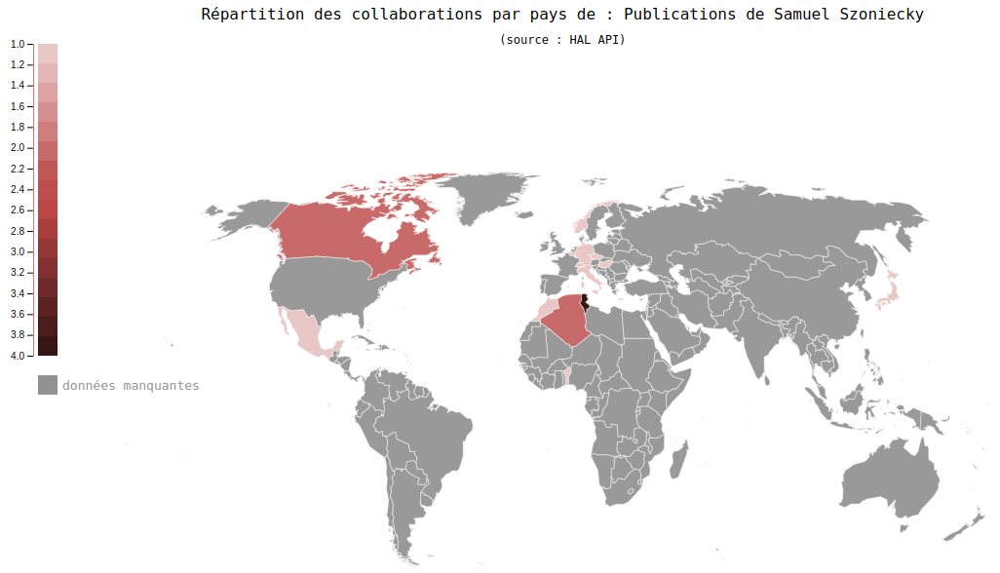
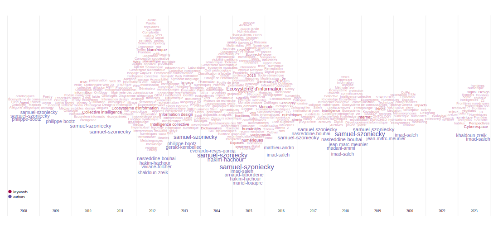

Samuel Szoniecky ![]()
Dossier d’Habilitation à Diriger des Recherches
En Sciences de l’information et de la communication.
CV détaillé
Préparé par : Samuel Szoniecky, MCF. Université Paris 8, Laboratoire Paragraphe
Jury
| Mr Machin | Rapporteur | Université de truc |
|---|---|---|
| Mme Boulot | Examinateur | Université d’ici |
Introduction
Le présent curriculum vitae est organisé en deux parties :
Partie 1 : une synthèse de mes activités scientifiques, pédagogiques et administratives
Partie 2 : une présentation détaillée de l’ensemble de mes activités.
Cette présentation détaillée explicite les aspects suivants :
une présentation de ma carrière, mes diplômes académiques,
mes responsabilités administratives,
mon parcours professionnel dans les activités d’enseignement,
mon parcours professionnel dans les activités de recherche,
mes publications productions scientifiques et leurs références sur HAL France
1 Partie 1 : Présentation synthétique : activités scientifiques, pédagogiques et administratives
1.1 Présentation générale
Samuel Szoniecky
Né le : 17 juin 1971 à Villiers Le Bel (95), nationalité Française
Situation familiale : Pacsé, 1 enfant
Adresse personnelle : xxx
Tél. (portable) : 07.xx.xx.xx.xx
Mail (personnel) : xxx
Fonction actuelle :
Maître de conférences Hors classe en Science de l’Information et de la Communication à l’Université Paris 8. Département Humanités Numériques
Chercheur au Laboratoire Paragraphe (EA 349) - axe Dispositifs Numériques : Production, Usages et Modélisation Communicationnelle (DiNuPUMoC).
Tél. (bureau) : xxx – Mail (pro) : samuel.szoniecky@univ-paris8.fr
Site Web(pro) : https://samszo.univ-paris8.fr - Forge logicielle : https://github.com/samszo
1.2 Diplômes académiques
| 2012 | Doctorat en Sciences de l’Information et de la communication, Études et conception d’un langage symbolique pour l’intelligence collective : vers un langage allégorique pour le Web, Université Paris 8, sous la direction de Imad Saleh. |
| 1995 | DEA d’Histoire de l’art, John Cage, influence des processus chaotiques dans la création contemporaine, Université Paris X Nanterre, sous la direction de Claude Frontisi. |
| 1994 | Maîtrise d’Histoire de l’art, Le musée imaginaire d’un marchand de gravures à Paris au XVIIIe siècle, Université Paris X Nanterre, sous la direction de Christian Michel |
| 1993 | Licence d’Histoire de l’Art, Université Paris X Nanterre |
1.3 Parcours professionnels, Activités administratives & Charges collectives
1.3.1 Parcours professionnels
Carrière universitaire
| Présent - 2013 | Maître de conférences en Science de l’Information et de la Communication, Université Paris 8, Département Humanités Numériques |
| 2013 - 2012 | Ingénieur d’étude post-doc, Laboratoire Paragraphe |
| 2012 - 2009 | Contrat doctoral, Université Paris 8, Laboratoire Paragraphe |
| 2009 - 2007 | Professeur contractuel, Université Paris 8, Département Hypermédias |
| 2007 - 2006 | Chargé de cours, Université Paris 8, Département Hypermédias |
| 2006 - 2005 | Conférencier, Université Paris 8, Département Hypermédias |
Carrière privée
| 2009 - 2005 | Architecte de l’information, consultant indépendant, Montreuil |
| 2009 - 2005 | Cofondateur d’une structure de production et distribution de contenus culturels, Montreuil |
| 2006 - 2001 | Ingénieur informatique, consultant spécialiste, chef de projet, Paris |
| 2000 - 1998 | Analyste - chef de projet, MuldiMédiaDiffusion, Blois |
1.3.2 Activités administratives & Charges collectives
| Présent - 2023 | Membre élu du conseil de l’UFR STN |
| Présent - 2020 | Membre du conseil pédagogique de l’UFR STN Paris 8 |
| Présent - 2018 | Membre élu de la commission de spécialistes 71e section |
| Présent - 2018 | Membre de conseil académique de l’EUR ArTec |
| Présent - 2016 | Membre du conseil documentaire du SCD, Université Paris 8 |
| Présent - 2014 | Membre de comité de sélection pour des postes de MCF en SIC : 9 dont 2 Vice-président |
| Présent - 2018 | Responsable pédagogique Master 2 AVUN |
| 2019 - 2010 | Responsable pédagogique Licence Pro DWM |
1.3.3 Charges d’organisation de conférences & Rayonnement scientifique
Présent - 2013 (6 éditions avec CL & OS.) CL : comité de lecture OS : ouvrage scientifique |
Membre du comité scientifique et d’organisation de la conférence H2PTM : « Hypertexte et Hypermedia, Produits, outils et Méthode » ; Partenaires : laboratoire Paragraphe, laboratoire DeVisu, Université de Franche-Comté, CNAM, Université de Lorraine ; Site Web : https://h2ptm.univ-paris8.fr/ |
Présent - 2014 (4 éditions avec CL & OS.) |
Co-responsable scientifique de la conférence Frontières numériques Site Web : https://conferences-paragraphe.univ-paris8.fr/frontieres-numeriques/2022/, https://conferences-paragraphe.univ-paris8.fr/frontieres-numeriques/2023/ |
2020 -2018 (2 éditions avec CL & OS.) |
Co-Fondateur de la conférence Digital Tools & Uses Site Web : https://digitaluses-congress.univ-paris8.fr/ |
2017 - 2016 (2 éditions avec CL & OS.) |
Fondateur de la conférence Nouveaux défis de l’Internet des Objets Site Web : https://ido2017.sciencesconf.org/, https://ido2016.sciencesconf.org/ |
2022 et 2010 (3 éditions avec CL & OS.) |
Membre du comité scientifique et d’organisation de la conférence O1 Design Site Web : http://01design.eu/10/ http://01design.eu/12/ |
| Présent - 2009 | Membre du comité scientifique de conférences : 15 |
1.4 Activités d’enseignement
| Mémoires de Master encadrés (M1 et M2) | 31 |
| Stages encadrés dans le laboratoire Paragraphe | 11 |
| Cours | 20 |
| Etablissement d’enseignement | 7 |
| Parcours d’enseignement | 14 |
| Heure de cours à l’université depuis 2012 | +3 300 |
| Production de documents pédagogiques | 35 |
| Conception dispositifs pédagogiques innovants | 18 |
1.4.1 Cours à l’Université Paris 8
| Année | Matière | Formation | Heures | % CM | % TD |
|---|---|---|---|---|---|
| Présent - 2012 | Langage du Web | Master 2 THYP | 30 | 50 | 50 |
| Présent - 2014 | Ethique du web et écosystèmes d’information | Master 2 AVUN | 30 | 50 | 50 |
| Présent - 2019 | Atelier génération de texte | Master 1 NET | 40 | 20 | 80 |
| Présent - 2019 | Méthodologie de travail collaboratif | Licence 1 Psychologie IED | 50 | 30 | 70 |
| Présent - 2020 | Approches transversales des humanités numériques | Master 1 CEN Master 1 NET | 6 | 80 | 20 |
| Présent - 2020 | Participation critique | Master 2 CEN | 30 | 40 | 60 |
| Présent - 2020 | Systèmes d’information et programmation Internet | Master 2 GSI | 30 | 50 | 50 |
| 2020 - 2013 | Atelier de projets collaboratifs | Licence Pro DWM | 50 | 0 | 100 |
| 2020 - 2013 | Perfectionnement outils et langages de base | Licence Pro DWM | 30 | 30 | 70 |
| 2020 - 2013 | Réalisation avancée en développement | Licence Pro DWM | 30 | 30 | 70 |
| 2020 - 2013 | Rencontres crossmédia | Licence Pro DWM | 30 | 30 | 70 |
| 2020 - 2013 | Gestion de projet | Licence Pro OCI | 30 | 20 | 80 |
| 2020 - 2010 | Rencontres crossmédia | Licence Pro DWM | 30 | 30 | 70 |
| 2017 - 2015 | Hyperurbain | Master 2 NET | 30 | 30 | 70 |
| 2016 - 2015 | Javascript pratique | Master 1 CEN | 30 | 50 | 50 |
| 2015 - 2013 | Atelier 3D | Master 1 CEN | 30 | 50 | 50 |
| 2015 - 2010 | Conception de site Web | DU Assistant en technologies numériques audiovisuelles | 30 | 50 | 50 |
| 2011 - 2005 | Hypermédia collaboratif | Master 1 CEN | 30 | 50 | 50 |
| 2010 - 2009 | Accessibilité Web, internet, multi modalité, communication homme/machine | Master 2 CEN | 30 | 50 | 50 |
| 2010 - 2009 | Technique du Web : XML | Master 1 CEN | 30 | 50 | 50 |
| 2010 - 2009 | Conception d’un projet dans l’écosystème Web | Master 1 ILOI | 30 | 50 | 50 |
| 2009 - 2008 | Gestion électronique de documents hypermédias | Master 2 THYP | 30 | 50 | 50 |
1.4.2 Cours dans d’autres institutions
| Année | Matière | Formation | Heures | % CM | % TD |
|---|---|---|---|---|---|
| Présent - 2017 | Web sémantique pour chef de projet | Certificat de spécialisation Innovations territoriales, Politiques numériques et Open Data, CNAM Bretagne | 6 | 80 | 20 |
| Présent - 2015 | Data visualisation | DU Dataviz, IUT de Paris Rives de Seine | 6 | 50 | 50 |
| 2023 - 2022 | Anthropologie et épistémologie du numérique | Master Humanités numériques, Université de Rouen Normandie | 30 | 70 | 30 |
| 2022 - 2020 | Base de données relationnelle | Master Méga Données et Analyse Sociale (MéDAS), CNAM Paris | 30 | 50 | 50 |
| 2018 - 2015 | Conception de site Web | Master CFI, INALCO | 30 | 50 | 50 |
| 2018 - 2017 | Sémiologie | Licence Pro Métiers de la communication : chef de projet communication, IUT de Paris Rives de Seine | 30 | 70 | 30 |
| 2015 - 2012 | Algorithmique | Master DIMI, Université Paris 13 | 30 | 50 | 50 |
1.5 Productions scientifiques : (dans la nomenclature du HCÉRES 2024)
| Article dans une revue | Individuel : 2 Collectif : 8 |
| Communication dans un congrès | Individuel : 33 Collectif : 17 |
| Proceedings - Recueil des communications | Collectif : 2 |
| No spécial de revue | Collectif : 1 |
| Ouvrage | Individuel : 2 Collectif : 5 |
| Chapitre d’ouvrage | Individuel : 6 Collectif : 5 |
| Cours | 39 |
| Logiciel | 92 |
| TH & M : Thèses de doctorat & Mémoires | 3 : 1 Thèse en SIC 1 Mémoire de DEA en Histoire de l’Art 1 Mémoire de Maitrise en Histoire de l’Art |
1.6 Encadrements de chercheurs-euses
| Thèses soutenues : Co- direction ou co-encadrement de thèse : quotité 50% | 1 : Décembre 2016 |
| Thèses en cours de finalisation : Co- direction de thèse : quotité 50% | 2 |
| Jury de Thèses | 4 |
| Participation à des comités de suivi de thèse | 14 |
2 Partie 2 : Présentation détaillée des Activités scientifiques, pédagogiques et administratives
| Nom : Szoniecky | Prénom : Samuel | NUMEN : XXXXX |
|---|
Maitre de Conférences à l’Université Paris 8
Laboratoire : Paragraphe - Dispositifs numériques : production, usages et modélisation communicationnelle
Département : Humanités numériques
Mail : samuel.szoniecky@univ-paris8.fr
Adresse : 2 Rue de la Liberté, 93200 Saint-Denis
2.1 Synthèse de la carrière
2.1.1 Diplômes
2012 - 2009 : Doctorat en Sciences de l’Information et de la communication
Soutenu à l’Université Paris 8 sous la direction de Imad Saleh.
Qualifié en 2012 par la section 71 du CNU : Science de l’information et de la communication
Sujet de thèse : Études et conception d’un langage symbolique pour l’intelligence collective : vers un langage allégorique pour le Web
Jury :
| Mme Sylvie Leleu-Merviel | Rapporteur | Professeur Université de Valenciennes et du Hainaut Cambrésis |
| Mr Manuel Zacklad | Rapporteur | Professeur Conservatoire National des Arts et Métiers |
| Mr Jean-Pierre Balpe | Examinateur | Professeur émérite Université Paris 8 – Saint Denis |
| Mr Jean-Max Noyer | Examinateur | MCF/HDR Université de Nice Sophia Antipolis |
| Mr Emmanuel Sander | Examinateur | Professeur Université Paris 8 – Saint Denis |
1996 - 1995 : Licence de Philosophie par correspondance
Développement et expérimentation d’une application informatique avec Hypercard pour l’écriture philosophique post-métaphysique, Université Paris X Nanterre.
1995 - 1994 : DEA d’Histoire de l’art
Sujet de mémoire : John Cage, influence des processus chaotiques dans la création contemporaine, Université Paris X Nanterre, sous la direction de Claude Frontisi.
1994 - 1993 : Maîtrise d’Histoire de l’art
Sujet de mémoire : Le musée imaginaire d’un marchand de gravures à Paris au XVIIIe siècle, Université Paris X Nanterre, sous la direction de Christian Michel
1993 - 1990 : Licence d’Histoire de l’Art
Université Paris X Nanterre
1990 : Baccalauréat A1 (Lettres-Mathématiques)
Lycée Albert Schweitzer, Le Raincy, Seine Saint-Denis
2.1.2 Activités professionnelles
2.1.2.1 Carrière universitaire
| Présent - 2013 | Maître de conférences à l’Université Paris 8 Emploi n° XXX Discipline : Science de l’Information et de la Communication UFR / Dèp. : Sciences et Techniques du Numérique / Humanités Numériques Laboratoire de rattachement : Paragraphe (EA 349) |
| 2013 - 2012 | Ingénieur d’étude post-doc Projet : GEVU Laboratoire de rattachement : Paragraphe (EA 349) |
| 2012 - 2009 | Contrat doctoral Contrat de 3 ans attribué par l’Ecole Doctorale Cognition Langage Intéraction (CLI) pour un sujet de thèse fléché pour l’étude et la conception d’un langage symbolique pour l’intelligence collective |
| 2009 - 2008 | Professeur contractuel : PRAG UFR / Dèp. : Mathématiques, Informatique, Technologies, Sciences de l’information et de la Communication / Hypermédias |
| 2007 - 2006 | Chargé de cours UFR / Dèp. : Mathématiques, Informatique, Technologies, Sciences de l’information et de la Communication / Hypermédias |
| 2006 - 2005 | Conférencier UFR / Dèp. : Mathématiques, Informatique, Technologies, Sciences de l’information et de la Communication / Hypermédias |
2.1.2.2 Carrière privée
| 2009 - 2005 | Architecte de l’information Société : consultant indépendant Projets pour : ANEA, ONADA, Région Aquitaine, Editions Flohic, Archipelago-publishing, 10ème Famille, Life Explorer, Wrigley… |
| 2006 - 2001 | Ingénieur informatique, consultant spécialiste, chef de projet Société : EXAKIS, entreprise de Services du Numérique basée à Paris, Lyon, Biarritz. Projets pour : ANPE, CEGETEL, Telecom Developpement, Mairie de Paris, Groupe Casino, Bouygue Telecom, Banque de France, SFR… |
| 2000 - 1998 | Analyste - chef de projet Société : Multi Media Diffusion, entreprise de Services du Numérique basée à Blois. Projets pour : AGEA, Agence française de l’innovation, Ecole Centrale de Paris… |
2.1.3 Principales responsabilités et activités administratives
2.1.3.1 Responsabilités et mandats locaux
| Présent - 2023 | Membre du conseil de l’UFR STN, Université Paris 8 Élu en décembre 2023 Disciplines: Mathématiques, Informatiques, Sciences de l’information et de la communication. Responsabilités : Élaboration et modifications des statuts et du règlement intérieur, définition des objectifs d’enseignement et des orientations pédagogiques, organisation pratique des enseignements et de la formation, approbation du budget, élection du directeur. |
| Présent - 2020 | Membre du conseil pédagogique de l’UFR STN à Paris 8 Disciplines: Sciences de l’information et de la communication. Responsabilités : jury des diplômes, validation des équivalences, conseil disciplinaire… |
| Présent - 2018 | Membre de la commission de spécialistes 71e section, Université Paris 8 Élu en 2018, ré-élu en 2023 Disciplines : Sciences de l’information et de la communication. Responsabilités : validation des profils de poste, sélection des candidats pour les poste d’ATER, proposistion des experts pour les évaluations des dossiers d’avancement de carrières. |
| Présent - 2016 | Membre du conseil documentaire du SCD, Université Paris 8 Disciplines: pluridisciplinaire. Responsabilités : Elaboration de la politique documentaire de l’Université Paris 8, votes des budgets et validations des rapports annuels. |
| 2012 - 2009 | Membre du conseil scientifique du laboratoire Paragraphe Élu en 2009 Disciplines : Psychologie, Sciences de l’information et de la communication. Responsabilités : Organisation des réunions pour l’accompagnement des doctorants, rédaction des comptes-rendus de réunions, participation à la rédaction du rapport d’activité pour l’AERES… |
2.1.3.2 Missions et gestion de projets de l’établissement
| Présent - 2018 | Membre du conseil académique de l’EUR ArTec Disciplines : pluridisciplaire. Responsabilités : Instance législatrice de l’EUR ArTeC, le conseil académique émet des avis sur les orientations scientifiques de l’EUR proposées par le comité exécutif. Il se prononce sur la qualité des programmes de recherche et de formation envisagés et évalue leurs résultats. Il réunit une quarantaine de membre.. |
| 2019 - 2012 | Membre de l’IDEFI - CréaTIC Disciplines : pluridisciplaire. Responsabilités : Participation à la conception du projet et à la conception de pédagogies innovantes visant à développer les technologies de l’information et de la communication au service de la pédagogie socioconstructiviste par projets et de la créativité numérique étudiante… |
Responsabilités pédagogiques
En tant que responsable de formation voici une liste non exhaustive des missions que j’ai effectuées :
Participation à la création des parcours dans le Master Humanités numériques de Paris 8 : https://humanites-numeriques.univ-paris8.fr/
Rédaction du dossier d’auto-évaluation et de réhabilitation des maquettes
Définition du programme pédagogique
Constitution de l’équipe pédagogique
Examen des dossiers et entretiens pour la sélection des étudiants
Suivi des étudiants en alternances
| Présent - 2018 | Responsable pédagogique Master 2 Analyse et Valorisation des Usages du Numérique (AVUN) Disciplines : science de l’information et de la communication. Le parcours Analyse et Valorisation des Usages Numériques (M2) a pour objectif de former à la recherche et aux pratiques professionnelles sur lesquelles se fondent les métiers émergents relatifs à la valorisation des données et des usages numériques. La valorisation des données numériques permet aux organisations, à partir d’une analyse des traces numériques, des productions et des comportements (webmarketing) de définir les solutions optimums selon les besoins et d’assister les prises de décisions. |
| 2019 - 2010 | Responsable pédagogique de le Licence Pro Web Design Mobile (WDM) Disciplines : science de l’information et de la communication. En partenariat avec Gobelins - Ecole de L’image jusqu’en 2016 sous le nom Création Développement Numérique en Ligne (CDNL), ce diplôme en alternance forme des professionnels aptes à concevoir et à développer des applications multimédias en se focalisant plus particulièrement sur les possibilités offertes par le web ou les réseaux d’information privés (intranet). |
2.1.4 Contrats de recherche
Présent - 2019 : Arcanes - Des arts trompeurs à la post-vérité : régimes d’authenticité en contexte numérique
Budget : Subvention CRSH – Savoir : 256 000 $
Partenaires : Renée Bourassa (Université Laval, Canada), Jean-Marc Larrue (Université de Montréal, Canada), Fabien Richez (UQAM, Canada)
Défis scientifiques : Le projet Arcanes comporte deux volets. Le premier volet explore les processus de production du sens, les filiations historiques et intermédiales ainsi que les dynamiques de médiation, tout comme les divers dispositifs et les processus d’éditorialisation dans le sillon des humanités et des cultures numériques. Le deuxième volet interroge les puissances du faux, les mécanismes du leurre ainsi que les stratégies d’illusion tels qu’ils se manifestent dans les arts – que nous qualifions « d’arts trompeurs » -, la littérature, les pratiques médiatiques et l’écosystème socionumérique actuel.
Valorisation :
Site Web en relation : https://crilcq.arcanes.ca/
Publications :
Szoniecky, Samuel (2024). “Être ou ne pas être trompé : Interpréter les pouvoirs de IAs génératives”. Stratégies de tromperie et puissances du faux dans les arts trompeurs et l’écosystème socionumérique contemporain, Université de Montréal. https://samszo.github.io/ConfErrance/arcanes2023.html
Bourassa, R., Larrue, J.-M., Godin, G., & Szoniecky, S. (2019). Espace liminaire de l’authenticité : Une démarche d’humanités numériques. In H2PTM’19 (p. 126‑144). ISTE Editions.
Conception et développements sur de dispositifs numériques
Omeka-S-theme-EDISEM : https://github.com/samszo/Omeka-S-theme-EDISEM
Omeka-S-module-ChaoticumSeminario : https://github.com/samszo/Omeka-S-module-ChaoticumSeminario
Omeka-S-module-ZoteroImportplus : https://github.com/samszo/Omeka-S-module-ZoteroImportplus
2021 - 2018 : Polemika - Génération automatique d’arguments pour l’éducation à l’esprit critique
Budget : Région Ile de France : 30 800 € , ArTec : 5 000 €
Collaborateurs : Orélie Desfriches Doria (Paragraphe), Jean-Marc Meunier (Paragraphe), Melody Laurent, Roch Delannay
Défis scientifiques : Ce projet de recherche vise à expérimenter des processus innovants de formation à l’esprit critique. Le premier volet dont nous devrions obtenir le financer par les “Trophées de l’innovation en Ile de France” se centre sur le développement informatique d’un générateur automatique d’arguments sous forme de Web App, qui sert d’interface d’interaction avec les utilisateurs, et de moyen de collecte de données sur les émotions suscitées par la génération des contre-propositions. En articulation avec ce projet, l’objet du projet Polemik’Art financer par ArTec consiste à
concevoir des modalités d’interactions humaines et numériques avec des dispositifs de mise en scène du générateur d’arguments développé dans POLEMIKA,
étudier le rôle des émotions dans la réception de ces mises en scène de contre-propositions,
évaluer l’influence de la participation des publics sur l’évolution de leurs émotions.
Valorisations :
Site Web : https://polemika.univ-paris8.fr/
Hackathon à la Cité des Sciences
Bulletin de l’actualité de la recherche à P8, Mai 2020
Intervention au séminaire Arcanes par Orélie Desfriches Doria, et Samuel Szoniecky, le 19 février 2021 : https://crilcq.arcanes.ca/event/letude-des-controverses-litteracie-des-fake-news-et-formation-a-lesprit-critique/
Conception et développements de dispositifs numériques
Mise à disposition des données de la recherche via l’API Omeka S : https://polemika.univ-paris8.fr/omk/api
2014 - 2012 : GAPAII - Génération Automatique de Proverbes et Analyse des Interprétation exprimées sur Internet
Budget : Labex Art H2H : 15 000 €
Collaborateurs : Hakim Hachour (Paragraphe), Nasredine Bouhai (Paragraphe), Jean Pierre Balpe (Biennale des poètes), Pierre Lévy (Université d’Ottawa, Canada)
Partenaires : UMR Structures Formelles du Langage (Paris 8), Chaire de recherche du Canada sur l’intelligence collective Université d’Ottawa (Canada), Groupe CERCO, Bénin (Afrique de l’ouest)
Défis scientifiques : A partir du constat empirique que l’usage des proverbes permet de convoyer des éléments de connaissances pertinents dans une situation sociale donnée, et que l’interprétation contextuelle des proverbes permet de produire des schémas d’action hétérogènes selon les acteurs et la situation, il nous était apparu opportun d’étudier la structuration de proverbes et leurs interprétations, et ce, à partir d’une analyse d’un corpus de proverbes multilingue [français, anglais, arabe et fon (dialecte africain)] et d’un générateur automatique de proverbes.
Publications :
Szoniecky Samuel, Hakim Hachour, and Nasreddine Bouhai. 2012. “Générateur Hypertextuel Pour l’interprétation Des Médias Sociaux Dans Une Topologie Sémantique.” Les Cahiers Du Numérique Vol. 7, Empreintes de l’hypertexte sous la direction de Caroline Angé (3): 93–121. http://lcn.revuesonline.com/article.jsp?articleId=17695.
Szoniecky Samuel, Hakim Hachour, and Nasreddine Bouhai. 2012. “The Role of Semantic Topology in Sensmaking Processes : Adressing Challenges of Indexing with Metalanguages.” In 22nd European-Japanese Conference on Information Modeling and Knowledge Bases, pp. 244–257. Prague, Czech Republic. http://www.ksi.mff.cuni.cz/ejc/.
Szoniecky Samuel. 2013. “Dictionnaires de Catégories Pour La Génération Automatique de Proverbes : Vers Une Économie Sémantique de l’interprétation.” In La Néologie, Les Corpus Informatisés Et Les Processus d’élaboration Des Langues de Moindre Diffusion. Ghardaïa, Algeria. https://hal-univ-paris8.archives-ouvertes.fr/hal-01098427.
2012 - 2012 : GEVU - Outil d’intelligence collective pour le diagnostic de l’accessibilité des bâtiments et des voiries
Budget : Contrat de recherche de l’université de Lille : 80 000 €
Partenaires : Alcéane Bailleur social Le Havre, Laboratoire TVES Université de Lille
Défis scientifiques : Ce travail de recherche interdisciplinaire inclut des approches de géographie, d’urbanisme, d’ergonomie, de science de l’information, de design d’information et de pédagogie. L’objectif commun consiste à développer, en partenariat avec un OPH, un outil d’intelligence collective pour le diagnostic de l’accessibilité des bâtiments et des voiries : GEVU. Les spécificités de cette application Web apportent des bénéfices certains aux acteurs du logement social notamment en terme de visualisation et d’analyse des territoires mais aussi concernant la communication entre les acteurs. Il nous a aussi permis de mettre en place des méthodes de modélisation des écosystèmes d’information et de confronter nos approches dans le cadre d’un atelier de conception coopérative, pour une conduite de projets en référence à l’homme.
Publications :
Szoniecky Samuel, Viviane Folcher, Franck Bodin, and Khaldoun Zreik. 2012. “GEVU : Un Outil Pour Territorialiser Les Usages de La Ville.” In O1 Design.8 : Echelles, Espaces, Temps, 45–62. Paris: Productions Europia.
2.1.5 Synthèses
Depuis mon recrutement, ma carrière se déroule :
Pour l’aspect enseignement :
je donne principalement des cours au Département Humanités Numériques (anciennement Hypermedias) de l’Université Paris 8, j’occupe toujours mes heures statuaires à 192HTD et plus en fonctions des besoins et compétences. Les enseignements que j’ai données se développent suivant trois axes complémentaires : technique, conceptuel, collaboratif. Première un axe technique où les étudiants sont formés aux langages informatiques et aux outils nécessaires pour le développement de dispositifs numériques et la maîtrise des flux d’information et de communication dans un environnement Web. C’est l’occasion suivant une pédagogie par projet, de montrer par des exemples concrets de conception et de développement, comment utiliser les outils gratuits et Open Source pour mettre en pratiques les langages informatiques. Le deuxième axe est plus théorique, il consiste à montrer aux étudiants comment analyser et critiquer une thématique en utilisant les notions et les théories des sciences de l’information et de la communication et plus généralement des sciences humaines à travers des outils et des méthodes de veille informationnelle. L’objectif est d’encourager les étudiants à faire de la « musculation cérébrale» et a constituer leur propre base de connaissances afin d’augmenter leurs pouvoirs de discernement et d’action. Le troisième axe consiste à mettre les étudiants en situation de travail collectif afin qu’ils expérimentent les difficultés et les avantages de l’intelligence collective. Dans cet axe, nous accompagnons les étudiants dans la conception et la réalisation d’un projet numérique incluant par exemple : une note d’intention, un teaser vidéo, un site Web, une application mobile et un dossier de conception. Les étudiants doivent rédiger un cahier des charges pour un projet hypermédia/TIC, savoir communiquer et collaborer avec les équipes de création et de développement, participer à la réalisation de projets innovants, mettre en œuvre ou appliquer une méthode de développement adaptée à un travail d’équipe, savoir réaliser une maquette fonctionnelle, argumenter et défendre un point de vue en réunion d’équipe, devant des clients, décideurs, etc.
Pour l’aspect administratif :
Mon implication dans les instances de l’université Paris 8 en tant que membre du Conseil Documentaire du SCD, du conseil pédagogique de l’UFR STN et de la commission de spécialistes en science de l’information et de la communication, me donne une bonne connaissance des rouages nécessaires et des difficultés qu’il faut surmonter pour que les activités de recherche et la vie des institutions se développent. Grâce à ces activités, j’ai eu la chance de dialoguer avec de très nombreux chercheurs dont la liste complète serait trop longue à faire figurer ici mais que je remercie vivement pour ces conversations où l’échange de points de vue parfois très différents donnent à la recherche un goût à la fois subtile, surprenant et aventureux.
Pour l’aspect recherche :
je travaille au laboratoire Paragraphe (EA 349, Université Paris 8, CY Cergy Paris Université) principalement dans l’axe Dispositifs numériques : production, usages et modélisation communicationnelle (DiNuPUMoC) sous la direction d’Imad Saleh mais avec de nombreuses collaborations avec les autres axes de ce laboratoire notamment Innovation numérique et Intelligence Artificielle (CiTU), Médiations, Pratiques Informationnelles, Patrimoine (MPIP), Apprentissage, développement, cognition (ADC) lors de publications communes (szoniecky2016?; szoniecky2017?; desfrichesdoria2022?; ihadjadène2013?; laborderie2015?; meunier2017?; meunier2018?), de projets de recherche menés en collaboration (?@sec-projetPolemika, ?@sec-porjetPedagotheque) ou d’organisation d’évènement scientifiques (?@sec-seminaireAdacemu, O1 Design, H2ptm…).
L’atmosphère très fertile au sein de Paragraphe et les relations intenses que ce laboratoire entretient avec la communauté des sciences de l’information et de la communication, a stimulé l’engagement de mes recherches dans de multiples collaborations en France et à l’étranger. Celles-ci m’ont permis de découvrir des milieux et des pratiques très diverses, par exemple : avec des institutions prestigieuses comme la Bibliothèque Nationale de France, les Archives Nationales ou l’INA, avec des programmes de recherche ANR comme Biolographes ou Aliento, avec des projets de recherches internationaux comme Arcanes, avec des groupes de recherches comme GENIC ou MANEP, avec des enjeux sociétaux importants comme celui de l’accessibilité, de l’écologie ou de l’éthique. La participation dès l’origine à trois Projets d’Investissement d’Avenir (PIA) que sont le laboratoire d’excellence H2H, l’IDEFI CréaTIC et l’EUR ArTec, m’a donné la chance de découvrir des projets importants tout à la fois en terme de gouvernance de la recherche que de possibilité d’expérimentation.
Mes domaines de recherche interrogent la complexité des dispositifs numériques (IAs génératives, Internet des Objects, outils d’éditorialisation, de modélisation et de cartographie), tant du point de vue des technologies qu’elles utilisent (legoux2023?) que des discours qui portent sur elles (bachimont2017?; citton2023?; ertzscheid2023?; masure2023?; mineur2022?; saleh2018?). Face à ces écosystèmes de connaissances (szoniecky2014?) qu’il est difficile de discerner, de raisonner et d’agir, nous proposons une méthode d’analyse de ces phénomènes qui donnent aux chercheurs les moyens de construire des points de vue spécifiques, de les partager avec d’autres et de voir leurs évolutions. Cette méthode s’appuie sur une modélisation onto-éthique des existences informationnelles qui peuplent ces environnements(szoniecky2023?; szoniecky2020?; szoniecky2016?). Nous nous basons sur cinq principes théoriques :
les connaissances se produisent suivant un cycle continu de sémioses (µ2015?) dans le monde physique et dans le monde de la pensée (descola2005?),
l’analogie (hofstadter2013?) relie le discernement et l’action en gardant le souvenir de cette relation qui devient à force de répétition : une manière d’être (latour2012?),
les souvenirs prennent la forme d’un « pli » (deleuze1988?) à la manière de deux miroirs qui plient la lumière en se reflétant l’un dans l’autre à l’infini
entre discerner et agir, intuition et expression, une « pulsation existentielle » génère une « raison trajective » (berque2009?)
les pliages et leurs capacités à se faire, se défaire, se bloquer dépendent du degré de flexibilité cognitive (clément2021?).
Nous pratiquons cette méthode à partir d’outils ?@sec-outils que nous concevons et développons pour réaliser des cartographies de connaissances suivant les principes que nous exposerons en détails dans le second volume de cette HDR.
Relation internationales
La carte suivante montre la répartition des relations internationales que j’entretiens avec mes collègues étrangers :

Mots-clés (domaine de la recherche) Le diagramme suivant montre l’évolution des mots-clefs et des collaborations issues de mes publications dans HAL. Ce diagramme est généré par le dispositif numérique que nous avons conçu et développé pour analyser les dépôts dans HAL cf. https://samszo.github.io/StatsHAL/?q=authIdHal_s:samuel-szoniecky

Bibliographie de la synthèse
2.2 Activités d’enseignement
2.2.1 Jurys
2.2.1.1 Membre de Jury de Master
En tant que responsable pédagogique j’organise et participe aux jurys de recrutement et de délivrance des diplômes :
Présent - 2018 : Master 2 AVUN
2019 - 2016 : Licence 3 Pro Design Web Mobile
2016 - 2010 : Licence 3 Pro Conception Développement Numérique En Ligne
En tant que membre du département humanités numériques, je participe aux conseils pédagogique et de perfectionnement pour la mention Humanités numériques ainsi qu’aux jurys de délivrance de diplôme pour les formations suivantes :
Présent - 2006 : Master 2 Technologie de l’HYPermédia
Présent - 2014 : Master 2 AVUN
Présent - 2015 : Master 2 NET
J’ai aussi participé de 2009 à 2011 aux jurys de délivrance des diplômes du Master EU Management Multimedia 3M2 délivré par le Campus de la Fonderie de l’image (CNA-CEFAG), Bagnolet
2.2.1.2 Membre de Jury de thèses
2019 Jury de thèse de El Hadji Malick Gueye, Politiques d’accès aux données statistiques sur le web à l’ère de l’open data : pratiques et perspectives. Cas des Instituts Nationaux de Statistique d’Afrique membres du réseau AFRISTAT.
2018 Jury de thèse de The Loc Nguyen, Non-pharmacological interventions : terminology acquisition and visualization
2018 Jury de thèse de Mohamed Benabid, Pratiques de consommation et processus de changement organisationnel : cas du marché de l’information en ligne
2016 Jury de thèse de Mathieu Andro, Bibliothèques numériques et crowdsourcing : expérimentations autour de Numalire, projet de numérisation à la demande par crowdfunding
2.2.2 Production de documents pédagogiques
Dans le cadre de mon activité d’enseignement je mets à disposition des étudiants les documents pédagogiques suivants :
2.2.2.1 Supports de cours
Les supports de cours sont disponibles directement sur mon site web sous la forme de diaporama dynamiques et interactifs, par exemple :
Pour les étudiants plus curieux, je mets à disposition l’ensemble des supports de présentation que j’utilise pour mes conférences : https://samszo.github.io/ConfErrance/
Les documents pédagogiques pour les cours techniques sont constitués d’exemples de codes mis à disposition sur la plateforme collaborative GitHub sous la forme de projet auquel les étudiants participent. Le tableau ci-dessous a été généré automatiquement avec un outil d’extraction des données de GitHub : https://samszo.github.io/HDR/githubStats.html
Cette plateforme est aussi utilisée par les étudiants pour mettre à disposition leurs réponses aux exercices demandés, poser leurs questions, suivre les corrections.
2.2.2.2 Veille ciblée
Grâce à la plateforme de gestion collaborative de signets Diigo les étudiants peuvent accéder à une veille ciblée sur un ensemble de notions en lien avec le cours, par exemple :
2.2.2.3 Bibliographie commentée
Une bibliographie des ouvrages et articles importants dans le domaine est accessible en ligne avec des commentaires et des citations : https://www.zotero.org/luckysemiosis/items
2.2.3 Conception de dispositifs pédagogiques innovants
Parallèlement aux documents pédagogiques classiques, j’ai conçu et développé des dispositifs numériques pour accompagner mes enseignements.
2021 - 2022 : Pédagothèque pour l’enseignement de la psychologie
En partenariat avec l’Université Ouverte des Humanités (UOH) https://uoh.fr/front/ et en collaboration avec Jean-Marc Meunier, nous avons développé une pédagothèque pour l’enseignement de la psychologie https://pedagotheque.uoh.fr/psy/.
2.2.3.1 Module Innovant Pédagogique IDEFI-CreaTIC - EUR ArTec
Dans le cadre des Initiatives d’Excellence en Formations Innovantes, j’ai participé depuis sa conception au projet CréaTIC (http://idefi-creatic.net/fr/) en proposant des MIP (Modules Innovant Pédagogique). De même, dans le cadre de l’EUR ou en collaboration avec Philippe Bootz et Ines Laïtano, nous animons un MIP en littérature numérique.
| Présent - 2019 | Atelier génération de texte Ce MIP s’inscrit dans le cadre du partenariat international entre ArTeC et le Rochester Institute of Technology (RIT). L’objectif est de maîtriser la gestion d’un projet créatif numérique au sein d’une équipe internationale en mettant en œuvre des méthodologies de communication numérique collaborative synchrones et asynchrones. En collaboration avec : Laura Shackelford (RIT), Philippe Bootz (Paragraphe) Exemple de réalisation : https://samszo.github.io/genStory24/?idStory=1 |
| 2019 - 2018 | Jardiner les écosystèmes de connaissances En collaboration avec : Les Archives Nationales de France, Renée Bourassa (Université Laval, Canada), Chu-Min Chen (INREV, Paris 8), Everardo Reyes (Paragraphe), Jean-Marc Meunier (Paragraphe), Marie-Cécile Bouju (IDHE.S), Arnaud Laborderie (BNF) Atelier laboratoire : Développer des graines de connaissances Cet atelier prolonge ceux menés ces dernières années dans le champ de l’E-éducation (http://gapai.univ-paris8.fr/CreaTIC/E- education/Proverbes/, http://gapai.univ-paris8.fr/CreaTIC/CREP/ ), de la production d’Epub pour l’enseignement des statistiques (http://www.ontostats.univ-paris8.fr/ ) et de la valorisation des archives numériques (http://valarnum.univ-paris8.fr/Atelier-CreaTIC ). Nous nous concentrons cette année sur les problématiques de génération automatique d’interfaces numériques dédiées à la consultation et l’expression de connaissances via des cartographies sémantiques. Séminaire de recherche : Vie imaginaire et Intelligence artificielle Hackathon : Les Archives Nationales font leur Hackathon http://www.archives-nationales.culture.gouv.fr/les-archives-nationales-font-leur-hackathon Ce hackathon fait suite à l’atelier laboratoire de 2017-2018 « Valorisation pédagogique des archives numériques » et au Dev-Camp organisé par les Archives Nationales en octobre 2017. Il est lié à l’atelier laboratoire « Graines de connaissances » qui préparera les étudiants d’un point de vue technique et à l’atelier laboratoire « Métiers des archives ». Il s’est déroulé le vendredi 16 novembre à 18 h aux Archives Nationales, site de Paris et portait sur les rapports entre citoyenneté et archives. Workshop : Perspectives du livre numériques Suite aux ateliers « graines de connaissances », « Imaginer le changement », « Cartographier les pouvoirs d’agir », « animat » et « le livre augmenté », un jury a sélectionné les meilleures productions étudiantes pour les inviter à participer à cet événement. Ce workshop a pour triple ambition de : |
| 2018 - 2017 | Valorisation des archives numériques Atelier laboratoire : Conception de ressources pédagogiques pour les archives numériques https://valarnum.univ-paris8.fr/Atelier-CreaTIC Séminaire : Valorisation pédagogique des archives numériques https://valarnum.univ-paris8.fr/ |
| 2017 - 2016 | Créativité, reconstruction, proverbes Séminaire : Créativité, reconstruction, proverbes, octobre à décembre 2016, Paris 8 Atelier laboratoire : Créativité, reconstruction, proverbes, 17 au 20 janvier 2017, Centre d’art D’Haïti, Port au Prince En collaboration avec : Le centre d’art d’Haïti, Claude Yacoub (Paragraphe), Stéphane Safin (Paragraphe) L’atelier consiste à réaliser une action de recherche et formation sur la créativité dans les territoires désorganisés suite à l’effondrement des institutions après des catastrophes naturelles et/ou politiques. Le terrain sur lequel portera l’atelier est Haïti. Cette rechercheaction consiste premièrement à développer et expérimenter de nouveaux outils de créativité spécifiquement conçus pour impliquer des populations en situation de reconstruction dans l’expression de leurs besoins matériels et immatériels, deuxièmement à expérimenter l’usage de la sagesse populaire, par l’intermédiaire de ses formes courtes que sont les proverbes, comme source d’inspiration pour la créativité et, troisièmement, à analyser, comprendre et documenter les activités créatives mises en oeuvre dans le cadre des ateliers qui seront mis en place dans les contextes de reconstruction Ontologie pour les statistiques Atelier laboratoire : Ontologie pour le référencement des ressources pédagogique en statistiques https://ontostats.univ-paris8.fr/ En collaboration avec : Jean-Marc Meunier (Paragraphe) Hyperurbains et smartcities Atelier laboratoire : Conception de dispositifs numériques pour le voyage connecté En collaboration avec : Khaldoun Zreik (Paragraphe), Catherine Nyeki (Artiste numérique) Dans cet atelier les étudiants ont travaillé sur la réalisation d’un Alternative Reality Game (ARG). Cette nouvelle forme d’édition numérique se développe suivant 4 règles fondamentales : 1) Transmédias : l’ARG se développe avec tous les moyens nécessaires et usuels de la vie courante : affiches, carte à jouer, téléphone, applications, mails, réseaux sociaux, contact humain… 2) Enigmes : la progression dans le scénario ludique est rythmée par différentes tâches à accomplir qui doivent être suffisamment ardues pour inciter à l’entraide et à l’échange d’ information afin de faire émerger une communauté. 3) Puppet Master : Personnage central appelé «Marionnettiste» qui fait l’interface entre le joueur et histoire. Ce personnage clé fait donc bien entendu partie du récit. 4) ThisisnotaGame ! : C’est la devise du jeu en réalité alternée, faire en sorte que le joueur puisse être en immersion totale, que le jeu soit une expérience du réel. |
| 2016 - 2015 | Manuel de créativité Séminaire : Outils de créativité pour la reconstruction, 25, 26 juin 2015, Abbaye de Saint Riquier. En collaboration avec : Abbaye de Saint Riquier, Claude Yacoub (Paragraphe), Stéphane Safin (Paragraphe) L’atelier consiste à réaliser une recherche/action sur la créativité dans les territoires désorganisés suite à l’effondrement des institutions après des catastrophes naturelles et/ou des conflits. En 20162017, le terrain choisi est Haïti. Cette rechercheaction consiste d’une part à développer et expérimenter de nouveaux outils de créativité spécifiquement conçus pour répondre à des demandes particulières des acteurs de terrain et, d’autre part, à analyser, comprendre et documenter les activités créatives mises en oeuvre dans le cadre des ateliers qui seront mis en place dans les contextes de reconstruction. Proverbes et e-éducation Séminaire : Apprendre par les proverbes, MSH Paris Nord, 26 janvier 2016 Atelier laboratoire : Conception de ressources pédagogiques numériques à partir de proverbes En collaboration avec : Abdenbi Lachkar (Département d’études arabes, Paris 8), -DIAB-DURANTON Salam Diab-Duranton (Département d’études arabes, Paris 8) L’atelier « Proverbes et E-EDUCATION », faisant le lien entre l’étude des formes de discours courtes et l’interculturalité, consiste à concevoir un dispositif numérique pour l’E-Education. Le thème abordé en 2015-2016 est l’apprentissage des langues à partir de l’interprétation, de la traduction et de la sémantisation de proverbes. Les contenus produits à travers ce dispositif seront utilisés pour expérimenter avec des lycéens de Saint-Denis l’évaluation des frontières culturelles, sémantiques et interprétatives. Hyperurbains et smartcities Atelier laboratoire : Conception de dispositifs numériques pour le voyage connecté En collaboration avec : Khaldoun Zreik (Paragraphe), Catherine Nyeki (Artiste numérique) Cet atelier propose d’explorer les nouvelles formes d’informations et de la communication dans le cadre de la ville connectée. L’atelier s’est déroulé au premier semestre à Paris 8 dans le cadre d’un cours du Master 2 Net avec une dizaine d’étudiants venant en grande majorité du Master NET. L’objectif était de concevoir un dispositif numérique pour de nouveaux usages dans le train et de l’expérimenter sur la ligne Paris <-> Milan. |
| 2015 - 2014 | Le livre post-numérique Atelier laboratoire : Le livre post-numérique : création et édition collaborative scientifique Conférence : Livre post-numérique : historique, mutations et perspective, Fès, Maroc Cet atelier-laboratoire a été conçu dans le cadre du 17e colloque sur le document numérique (CIDE 17) consacré au « Livre post-numérique : historique, mutations et perspectives » dont il a constitué le volet expérimental. L’objectif était de répondre à la problématique du colloque par l’expérimentation en proposant aux étudiants de concevoir des dispositifs numériques et créer des prototypes. L’atelier s’est appuyé sur l’expérience du Master CEN autour des projets éditoriaux et du Master NET autour des ateliers d’ergonomie, le Master intelligence du Web apportant son orientation vers les enjeux algorithmiques et humains de l’intelligence collective, enfin les étudiants du master THYP mettant à disposition leurs compétences en développement Web. Archives en Italie Atelier laboratoire : Conception d’une base de donnée pour les humanités numériques |
2.2.4 Encadrement de mémoires de master
Dans le cadre des Master du département Humanités numériques j’ai suivie les travaux d’une trentaine d’étudiants.
2.2.4.1 Master 2 NET
Dans cette formation, les étudiants produisent un mémoire considéré comme un premier travail de recherche.
2018 - Hadjira Oumennor Makhaldi, À l’ère du numérique : Comment pourrait fonctionner l’agriculture du XXIe siècle ?
2017 - Gabrielle Godin : Théâtre et téléprésence : Enjeux de communication
2016 - Caroline Avril, Scénographie Émotive : Interfacer les émotions
2015 - Maxime Antremont, Abstractions numériques : Processus de création et négociation du sens dans la conception et l’usage d’artefacts numériques
2014 - Yann Soubai, Espaces associatifs de création et de diffusion culturelles
2.2.4.2 Master 2 THYP
Dans cette formation, les étudiants produisent un rapport de stage.
2016 - Asmae El Miloudi, Développement site web dynamique
2016 - Xiaohe Cao, Développement d’une application HTML5 hors ligne
2015 - Zineb Slaoui, Milliweb
2015 - Karima Hajjari, Développement de modules pour une solution de place de marché sur internet
2014 - Youcef Chahed, Etudes, Conception et Réalisation d’un Système Web
2014 - Firdaous Boumarsel, Rapport de stage de fin d’études ALBIANT-IT filiale du groupe BPCE
2014 – Mohame, El Frihmat, Création d’une application de gestion Participation à la refonte du site web actuel
2013 - Fahem Irantene, Réalisation d’une application centralisant les multiples opérations des différents départements de l’UPR IDF
2013 - Nadir Gharzal, Participation à la mise en œuvre d’une application web : Accueil Client
2013 - Halima Hammouda, Librairie onisep.fr
2012 - Chaimae Alami Mchichi, Stage intégrateur e-CRM et réalisation de développements sur la plateforme Neolane
2012 - Ala Aldin Atrash, Transforming GEVU Web application to mobile application using Adobe Flex
2010 - Ahlem Abderrahmane, Rapport de stage, CapSanté
2010 - Mehdi Touibi, Implémentation d’une application web 2.0 pour l’évaluation de l’activité politique des députés français au sein de l’Assemblée Nationale
2009 - Bachar ALBOUZ, Rapport de stage Direct interactiv
2009 - Bachir Bouslougui, Navigateur Spatio-temporel
2009 - Bargaoui Abderrahim, Plugin Firefox pour l’archivage de la poésie numérique
2008 - Olloi Dede, Réalisation d’un monitoring des activités d’Outsourcing
2008 - Aquil Ramzan, Développement d’un EDI éditeur et d’un guide shopping
2007 - Rime Karout, Création de la deuxième version du CMS EasyPlay
2007 - Karim Elhousny, Euro-Méditérranée Tours, Rapport de stage
2007 - Ahmed Mohamed, Evolution du système d’information du musée du sport
2007 - Hassen Boumaraf, Mise en place d’un intranet d’entreprise
2006 - Mehdi Benzarti, Modélisation et conception d’une base de données et création des interfaces de saisies pour l’étude P2M
2006 - Karima Kadri, Création d’un système d’information pour le contrôle de gestion aux Galeries Lafayette
2.2.4.3 Master 2 Ergonomie
Dans cette formation, les étudiants produisent un mémoire considéré comme un premier travail de recherche.
2017 - Eléonore Gouttegata, L’ergonomie au service de la conception : un outil numérique pour favoriser la recherche en sciences humaines et sociales
2.2.5 Présentation des principaux enseignements
Les cours que je donne depuis 2005 se font essentiellement à l’université Paris 8 dans le département Humanité numériques, anciennement Hypermédia, ce sont des cours en présentiels sauf depuis la pandémie de Covid où suivant la situation sanitaire je donne des cours à distance par visioconférence. Ce sont principalement des cours de Licence 3 professionnelle et de Master 1 et 2 qui s’adressent à un public en formation initiale venant de parcours très différents : information communication, informatique, sciences humaines, journalisme, graphisme…
L’objectif pédagogique principal consiste à montrer que dans les métiers du numérique ces disciplines sont complémentaires et que leurs mise en pratique dans des projets en équipe permet de s’enrichir des compétences des uns et des autres. J’insiste beaucoup sur la nécessité de développer tout à la fois des compétences techniques, des points de vue théoriques et des pratiques collaboratives efficaces. Il me semble aussi très important de transmettre aux étudiants l’idée que l’apprentissage est une pratique continue surtout dans une domaine très évolutif comme celui du numérique et que les cours sont que les prémices d’un formation tout au long de la vie.
Parallèlement à mes cours de Paris 8, tous les ans je donne un ou deux cours dans des établissements publics afin de m’enrichir d’ambiances, de pratiques et de public différents.
2.2.5.1 Département Humanités Numériques – Université Paris 8
| Parcours | Années | Cours |
|---|---|---|
Master CEN (Création Edition Numérique) |
Présent - 2020 | Approches transversales des humanités numériques (6H) Présentation des enjeux techniques et scientifiques des Humanités Numériques. |
Participation critique (30H) Ce cours intensive réuni pendant une semaine les étudiants de la Mention Humanité numérique pour après à deux jours de présentations d’universitaires et de professionnels sur un thème, concevoir une note d’intention sur un dispositif numérique mettant en pratique le thème abordé. |
||
| 2016 - 2015 | Javascript pratique (20H) Mise en pratique du Javascript par une pédagogie par projet |
|
| 2015 - 2013 | Atelier 3D (40H) Cours intensif pour la conception, la réalisation et la diffusion d’un dispositif Web 3D. |
|
| 2010 - 2009 | Technique du Web : XML (40H) Cours intensif pour la conception, la réalisation et la diffusion d’un dispositif Web 3D. |
|
Accessibilité Web, internet, multi modalité, communication homme/machine (40H) Cours pour former les étudiants à la maîtrise des flux d’information et de communication dans un environnement Web |
||
Master 2 THYP (Technologie de l’HYPermédia) https://www.univ-paris8.fr/-Master-Technologies-de-l-Hypermedia-678- |
Présent - 2012 | Langages du Web (40H) Explication des théories et mise en pratique des langages du WEB : html, javascript, Zend Framework, SVG, XML… |
Master 2 AVUN (Analyse et Valorisation des Usages Numériques) jusqu’en 2022 puis Master 2 ACEHN (Analyses et Conception de Environnements Humains Numériques ) |
Présent - 2014 | Ethique du web et écosystèmes d’information (30H) Cours pour sensibiliser les étudiants à la complexité de l’information-communication par une modélisation écosystémique suivant une problématique éthique. |
Master 2 GSI (Gestion Stratégique de l’Information) |
Présent - 2020 | Systèmes d’information et programmation Internet Description : Cours pour comprendre en quoi un système d’information est un écosystème et comment le développer en utilisant des langages de programmation Web. |
Licence de Psychologie IED |
Présent - 2019 | Méthodologie de travail collaboratif (50H) L’objectif de ce cours est de développer des compétences transversales en vous formant au travail collaboratif en ligne. Nous vous donnerons dans ce cours des outils d’autoévaluation de vos compétences, vous formerons à l’utilisation d’outils collaboratifs en ligne et vous ferons travailler un groupe pour réaliser un projet. |
Master 2 NET (Numérique : Enjeux, Technologies) |
2017 - 2015 | Hyperurbain (30H) Cours pour la conception collaborative de dispositifs numériques innovant dans le cadre de la ville connecté. |
| Licence Pro DWM (Design Web Mobile) anciennement CDNL (Création Développement Numérique en Ligne) | 2019 - 2010 | Rencontres média (60H) L’objectif de ce cours consiste à proposer à des étudiants en apprentissage, une vision théorique de leurs métiers par la rencontre avec des acteurs universitaires dans leur domaine. Savoir identifier les fondamentaux de la création numérique, analyse, synthèse. Élaborer et argumenter de manière critique des modèles théoriques et des recommandations pratiques. Analyser des contenus hypermédia (texte, image, son et vidéo). |
| 2019 - 2013 | Réalisation avancée en développement (40H) Ce cours présente les technologies pour concevoir et réaliser des dispositifs numériques en ligne, par exemple modéliser et intégrer des bases de données en appliquant une méthode de conception, connaître et savoir appliquer les règles d’accessibilité pour des pages Web, prendre en compte les balises sémantiques et les micro formats. |
|
| Perfectionnement outils et langages de base (40H) | | Ce cours forme les étudiants aux compétences suivantes : | | - Gérer des formats, créer et produire de l’iconographie, traiter les images. | | - Connaître les techniques de numérisation, d’optimisation de poids et de compression liés à la création, le traitement, la diffusion on/off line et l’archivage de l’image (2D fixe ou animée), du son et de la vidéo. | | - Rédiger des concepts créatifs en fonction du support choisi (presse, multimédia, spots, radio, TV, affiches, jeux vidéo, …) | ||
Atelier de projet collaboratif (40H) Dans ce cours nous accompagnement les étudiants dans la conception et la réalisation d’un projet numérique incluant : une note d’intention, un teaser vidéo, un site Web, une application mobile et un dossier de conception. Les étudiants devront rédiger un cahier des charges pour un projet hypermédia/TIC, savoir communiquer et collaborer avec les équipes de création et de développement, participer à la réalisation de projets innovants, mettre en œuvre ou appliquer une méthode de développement adaptée à un travail d’équipe, savoir réaliser une maquette fonctionnelle, argumenter et défendre un point de vue en réunion d’équipe, devant des clients, décideurs, etc. |
||
| DU Assistant en technologies numériques audiovisuelles | 2015 - 2010 | Conception de site Web (30H) Cours pour la conception collaborative d’édition numériques à partir de CMS et avec les technologie HTML, CSS, javascript. |
2.2.5.2 Département Informatique – Université Paris 8
| Parcours | Années | Cours |
|---|---|---|
| Licence Pro OCI (Objets Communicants Intelligents) | 2020 - 2013 | Gestion de projet (30H) Ce cours prépare les étudiants à mieux gérer leurs projets par la mise en pratique de méthode et d’outils : Gantt, planning partagé, gestionnaire de code… |
2.2.5.3 CNAM – Bretagne
| Parcours | Années | Cours |
|---|---|---|
Certificat de spécialisation CS 61 : Innovations territoriales, Politiques numériques et Open Data |
Présent - 2017 | Web sémantique pour chef de projet (6H) L’objectif de ce cours à distance est de familiariser les étudiants au technologies du Web sémantique pour qu’ils puissent les appliquer dans le contexte de leur travail de chef de projet. |
2.2.5.4 Département Information Communication – IUT Paris Descartes
| Parcours | Années | Cours |
|---|---|---|
DU : Analyse Data science https://iutparis-seine.u-paris.fr/metiers-de-la-data/diplome-duniversite-analyste-data-science/ |
Présent - 2015 | Data visualisation (4H) Cours pour la conception de visualisation interactives et dynamiques à partir de données provenant de l’Open Data. |
| Licence Pro Métiers de la communication : chef de projet communication | 2018 - 2017 | Sémiologie (24H) Ce cours permet aux étudiants de découvrir les principes fondamentaux de la sémiologie et des les appliquer dans des cas pratiques. |
2.2.5.5 Département Communication et Formation interculturelles - INALCO
| Parcours | Années | Cours |
|---|---|---|
Master CFI (Communication et Formation interculturelles) http://www.inalco.fr/departement/communication-formation-interculturelles |
2017 - 2015 | Conception de site Web (30H) Ce cours permet aux étudiants de découvrir les langages de base du Web (HTML, CSS, Javascript) et de développer un premier site en utilisant un CMS (SPIP, Wordpress) |
2.2.5.6 Département Science de L’information et de la Communication - Paris 13
| Parcours | Années | Cours |
|---|---|---|
| Master DIMI (Design d’interface multimédia et internet) | 2015 - 2012 | Algorithmique (30H) Ce cours permet aux étudiants de découvrir les règles de base de l’algorithmique et de développer un premier programme en Javascript |
2.2.5.7 UFR Lettres et Sciences Humaines - Université de Rouen Normandie
| Parcours | Années | Cours |
|---|---|---|
| Master Humanité Numérique | 2023 - 2022 | Anthropologie et épistémologie du numérique (30H) Dans ce séminaire, nous explorerons l’écosystème du numérique suivant deux approches complémentaires, une centrée sur l’humain (Descola) dans les milieux (Berque) numériques et l’autre sur les connaissances (Deleuze & Guattari) produites dans cet écosystème. Ces explorations seront modélisées sous la forme d’existences informationnelles (Morin, Latour) dont nous analyserons les pouvoirs de discerner, d’élaborer et d’agir (Groupe µ). L’objectif principal de ce séminaire est de fournir aux étudiants une méthode générique pour l’analyse des écosystèmes (Szoniecky) et l’expression d’un point de vue éthique (Deleuze). |
2.3 Activités de recherche
2.3.1 Encadrement de chercheurs⋅euses
Thèses soutenues : Co- direction ou co-encadrement de thèse : quotité 50%
| Décembre 2016 | Mathieu Andro Titre : Bibliothèques numériques et crowdsourcing : expérimentations autour de Numalire, projet de numérisation à la demande par crowdfunding. Financement pendant la thèse : autofinancé Situation après la thèse : Ingénieur text mining à l’Institut National de la Recherche Agronomique. |
Thèses en cours de finalisation : Co- direction de thèse : quotité 50%
2018 (prévisionnel de soutenance) |
Gabrielle Godin Titre (indicatif) : Ecosystème des “feuillets numériques” : éditorialisation numérique dans le spectacle vivant.. Financement de la thèse : Chargée de cours, ingénieure de recherche. |
2017 (prévisionnel de soutenance) |
Amri Toumia Titre (indicatif) : Protection des données de la vie privée dans l’Internet des Objets. Financement de la thèse : autofinancé. Situation active & professionnelle : Ingénieur informatique pour des start-up. |
2.3.1.1 Animation d’une équipe
Dans le cadre de la collection d’ouvrage Digital Tools & Uses, je participe à l’animation de l’équipe d’auteurs, à la création du site Web, à l’organisation des conférences… cf. http://digitaluses.info/
2.3.1.2 Création d’un axe scientifique
Dans le cadre de la refonte des équipes du laboratoire Paragraphe, j’ai participé à la création de l’axe « Dispositifs numériques : production, usages et modélisation communicationnelle », travaille à son développement et anime ses activités.
2.3.1.3 Comité de suivi de thèse
| 2023 |
|
| 2022 |
|
| 2021 |
|
| 2020 |
|
| 2019 |
|
| 2018 |
|
2.3.1.4 Encadrement de stagiaire dans le laboratoire Paragraphe
| 2023 | Stage de Rim Kaidi Description : Design d’information pour le bilan du laboratoire Paragraphe | Travail pour : https://github.com/samszo/StatsHAL | |
| 2023 | Stage de Christina Ramaroson Description : Recensement des dispositifs numériques de lutte contre les fakes news (jeux sérieux, sites de Hoax, fact checking etc.), élaboration d’un protocole d’expérimentation des dispositifs, expérimentation et analyse des dispositifs, synthèse. | Travail pour : polemika | Participant : Orélie Desfriches Doria | |
| 2021 | Stage de Chacha Mahfoud Description : Recherche documentaires structurées, lecture d’articles scientifiques, rédaction d’un état de l’art sur les fake news d’après la littérature scientifique, participation aux réunions et séminaires. | Travail pour : polemika | Participant : Orélie Desfriches Doria | |
| 2019 | Stage de Lucien Cartier-Tilet Description : Tests et corrections d’un module Omeka S pour le scraping des textes de Molière. | Travail pour : EUR ArTeC Omeka-S-module-Scraping | |
| 2018 | Stage de Roch Delanay Description : Conception et développement d’une application de mailing pour la gestion des publication scientifiques. | |
| 2012 | Stage de Ala Atrash Description : Conception et développement de la version tactile de GEVU | |
| 2012 | Stage de Claire Dezaille Description : Conception de statistiques pour GEVU | |
2.3.2 Participation à des activités d’expertise
| 2021 - 2020 | Soutien à la recherche-création pour la relève professorale, Canada. Décembre 2016, Digital Humanities 2017, Montreal, Canada |
| 2017 - 2016 | Digital Humanities 2017 Site Web en relation : https://dh2017.adho.org/ |
| 2016 | Colloque jeunes chercheurs de l’école doctorale CLI : Cognition, Langage, Interaction, Université Paris 8 Site Web en relation : http://cli2016.fr/comites.php |
| AAP Interdisciplinaires Phase 2, Université de Nantes | |
| 2015 | Digital Humanities 2016 Site Web en relation : http://dh2016.adho.org/ |
Colloque jeunes chercheurs de l’école doctorale CLI : Cognition, Langage, Interaction, Université Paris 8. Site Web en relation : http://cli2016.fr/comites.php |
|
| 2010 | ANR Programme CONTENUS ET INTERACTIONS |
2.3.3 Participation à des comités de lecture, éditoriaux et scientifiques
| Présent - 2015 | Membre du comité scientifique de la revue Internet des Objets dans ISTE Open Science Site Web en relation : http://www.openscience.fr/Internet-des-objets |
Membre du comité de la collections « Outils et usages numériques » Cette collection d’ouvrage dirigée par Imad Saleh regroupe uen vingtaine de chercheurs qui travaillent sur les outils et les usages du numériques Site Web en relation : http://digitaluses.info/ |
|
| Présent - 2017 | Membre du comité éditorial de la Revue sur les langues de moindre diffusion Cette revue dirigée par Abderrezak Dourari traite des enjeux des langues de mondre diffusion notamment concernant les impacts du numérique. Site Web en relation : https://www.cnplet.dz/component/k2/item/313 |
2.3.4 Organisation de séminaires, congrès et colloques de portée nationale et internationale
2.3.4.1 Création d’un colloque international IEEE
| 2020 | Digital Tools & Uses – Congress Hammamet - 15, 16 and 17 October 2020, https://digitaluses-congress.univ-paris8.fr/ |
| 2018 | Digital Tools & Uses – Congress Paris - 3, 4 and 5 Octobre 2018, https://digitaluses-congress.univ-paris8.fr/?page=Paris-2018 |
2.3.4.2 Membre d’un comité d’événement scientifiques
| 2023 | H2PTM 2023 La fabrique du sens à l’ère de l’information numérique : enjeux et défis Localisation : Arenberg Creative Mine, Valenciennes, France Site Web en relation : http://h2ptm.univ-paris8.fr/ |
| 2022 | Colloque international - Existences collectives Perspectives sémiotiques sur la sociabilité animale et humaine 20-21 octobre 2022, Université Paris 8 et Campus Condorcet Site Web en relation : https://existencesco.sciencesconf.org/ |
01 Design 12 Design Non-intentionel 13, 14 et 15 octobre 2022, Kerkennah Islands, Tunisia. Site Web en relation : http://01design.eu/12/ |
|
| 2021 | H2PTM 2021 Enjeux et nouveaux défis Localisation : Campus Condorcet Aubervilliers |
| 2019 | H2PTM 2019 De l’hypertexte aux humanités numériques 16, 17 et 18 octobre 2019, Université de Franche-Comté, Montbéliard Site Web en relation : http://h2ptm.univ-paris8.fr/OLD/h2ptm19/ |
Colloque Le corpus audiovisuel : Quelles approches ? Quels usages ? 15 avril 2019, INALCO Site Web en relation : https://calenda.org/584811 |
|
| 2018 | 01Design 11 Concevoir à l’ère post-numérique, 5-7 Juin, 2018, Maison du Design, Mons, Belgique Site Web en relation : https://01design.eu/11/ |
| 2017 | H2PTM 2017 Le numérique à l’ère des designs : de l’hypertexte à l’hyper-expérience, 18, 19 et 20 octobre 2019, Valenciennes - Arenberg Creative Mine Site Web en relation : http://h2ptm.univ-paris8.fr/OLD/h2ptm17/ |
| 2016 | 01 Design 10 9 et 10 novembre 2016, Grenade, Espagne Site Web en relation : http://01design.eu/10/ |
Colloque international Frontières Numériques 1 et 2 décembre 2016, Université de Toulon 2016 |
|
Journée nationale de l’Internet des objets 29 Novembre 2016, Cité de l’Innovation, Nokia Paris-Saclay Site Web en relation : https://ido2016.sciencesconf.org/ |
|
| 2015 | H2PTM 2015 14 au 16 octobre 2015, Paris, France Site Web en relation : http://h2ptm.univ-paris8.fr/ |
| 2014 | Colloque international Frontières Numériques 18 et 19 novembre 2014, Fes, Maroc |
9th International Conference on Human System Learning Alternative Learning Systems 11 – 13 juin 2014, Cotonou, Bénin |
|
| 2013 | H2PTM 2013 16, 17 et 18 octobre 2013, CNAM, Paris Site Web en relation : http://h2ptm.univ-paris8.fr/OLD/h2ptm13/ |
| 2012 | 01 Design 08 9, 10 et 11 mai 2012, Académie Royale des Beaux-Arts de Bruxelles, Belgique |
2.3.4.3 Organisation de séminaires
Présent - 2022 : Séminaire des membres du groupe d’étude et de recherche GENIC
Ce Groupe sur l’Éthique et le Numérique en Information-Communication), labellisé par la SFSIC autour des enjeux de l’éthique et du numérique, organise des séminaires depuis 2022 cf. https://genic.hypotheses.org/
J’ai participé à l’organisation globale de ce séminaire et plus particulièrement des séances suivantes :
Lundi 8 avril 2024 : Éthique des écosystèmes d’informations scientifiques : système d’évaluation, plateforme d’édition cf. https://genic.hypotheses.org/293
En collaboration avec : Alberto Romele (ICM Sorbonne Nouvelle)
Joachim Schopfel, L’éthique et l’évaluation scientifique : les SI sur la recherche
Lise Verlaet, Retour d’expérience sur la plateforme d’édition scientifique NumeRev : des pratiques au développement d’un workflow d’évaluation
25 janvier 2023 : Pilotage par les datas, pouvoir d’agir et éthique à l’ère numérique cf. https://genic.hypotheses.org/96
En collaboration avec : Lucile Desmoulins (Dicen Idf), Marta Severo (Dicen Idf)
Armen Khatchatourov, Piloter et gouverner : les datas entre l’ajustement perpétuel et la légitimation.
Camille Roelens, Pour une éthique du numérique résolument anti-paternaliste. Quelques propositions politiquement libérales et moralement minimalistes.
Présent - 2020 : Séminaire Arcanes
En lien avec le projet de recherche Arcanes ?@sec-projetArcanes, ce séminaire international et interdisciplinaire a pour objectif d’explorer les mécanismes à l’œuvre dans les arts trompeurs et l’espace informationnel qui activent les puissances du faux, prenant place dans une ère de post-vérité. https://crilcq.arcanes.ca/activites/seminaires-arcanes/
18 janvier 2021 – Présentation du séminaire
5 février 2021 – Stratégies de tromperies dans les arts vivants (Robert Faguy, Jean Marc Larrue)
19 février 2021 – L’étude des controverses : littéracie des Fake News et formation à l’esprit critique (Orelie Desfriches Doria, Samuel Szoniecky)
5 mars 2021 – De la postvérité aux imaginaires conspirationnistes (Yves Citton, Fabien Richert)
19 mars 2021 – Gouvernementalité algorithmique, usages journalistiques et éthique médiatique (Thomas Berns, Alexandre Coutant)
26 mars 2021 – Authenticité, dispositifs et contre-dispositifs de véridiction (Philippe Useille, Angelina Toursel, Nadia Naffi, Renée Bourassa)
9 avril 2021 – Stratégies de tromperies au cinéma et dans les dispositifs télévisuels (Pascal Martin, Pierre Barrette)
16 avril 2021 – Pouvoirs d’agir, autorités et visibilité dans les espaces numériques (Marcello Vitali Rosati, Arnaud Mercier)
23 avril 2021 – Séminaire Arcanes du 23 avril (Louis-Olivier Brassard, Gabrielle Godin, Erwan Geffroy)
8 octobre 2021 – Puissance du faux dans les arts trompeurs et l’écosystème socionumérique + Lancement de la publication Le livre en contexte numérique, Un défi de design
13 octobre 2021 – Des arts trompeurs à la post-vérité : Puissances du faux et stratégies de tromperie – Colloque international H2PTM21 « Information : Enjeux et nouveaux défis »
22 octobre 2021 – Les paradoxes du documentaire (Jean-Marc Larrue, U. de Montréal (Canada); Nele Wynants, U. d’Anvers (Belgique))
29 octobre 2021 – Simulation, Deep Fakes et intelligence artificielle (Vincent Bergeron, U. Laval (Canada), Massimo Leone, U. de Turin (Italie)
5 novembre 2021 – Stratégies de tromperie en littérature et dans les pratiques culturelles (Bertrand Gervais, UQAM (Canada); Philippe Marion, U. Louvain-la-Neuve (Belgique))
12 novembre 2021 – Désinformation, usages journalistiques et éthique médiatique (Colette Brin, U. Laval (Canada))
26 novembre 2021 – De la post-vérité aux imaginaires conspirationnistes (Pascal Froissart, CELSA Sorbonne Université (France))
3 décembre 2021 – Stratégies de tromperies dans les arts vivants. (Frédéric Tabet, U. de Toulouse 2 Jean Jaurès, Lara-Seppia (France))
16 septembre 2022 – Introduction à la 3e édition du séminaire ARCANES : Puissances du faux dans les arts trompeurs et l’écosystème socionumérique
23 septembre 2022 – Simulacres, figures de l’automate et personnages virtuels au cinéma et dans les jeux vidéo (Fabien Richert, UQAM [Canada]; Renée Bourassa, U. Laval [Canada])
7 octobre 2022 – Désinformation dans les écosystèmes socionumériques (Marcello Vitali-Rosati, UdeM [Canada]; Nicolas Sauret, U. Paris8 [France])
28 octobre 2022 – Les arts trompeurs dans les arts vivants et le cinéma (Frank Kessler, U. Utrecht [Pays-Bas] ; Rémy Besson, UdeM [Canada])
11 novembre 2022 – La tromperie en politique (Katharina Niemeyer, UQAM [Canada] et Emmanuelle Fantin, U. Sorbonne [France])
18 novembre 2022 – Désinformation, écosystème socionumérique (Christian Desîlets, U. Laval [Canada]; Sylvie Leleu-Merviel, UPHF [France])
25 novembre 2022 – Intelligence artificielle et transhumanisme (Maude Bonenfant, UQAM [Canada]; Sofian Audry, UQAM [Canada])
2 décembre 2022 – Désinformation dans les écosystèmes socionumériques et dans les arts trompeurs (Manuel Zacklad, Cnam [France]; Jean-Marc Larrue, UdeM [Canada])
9 décembre 2022 – Désinformation, écosystème socionumérique (Sophie Jehel, U. Paris8 [France])
Présent - 2018 : Séminaire DiNuPuMoc
Séminaire de l’axe Dispositifs numériques : production, usages et modélisation communicationnelle (DiNuPUMoC) du laboratoire Paragraphe. Une fois par mois, les membres de l’axe se réunissent pour présenter leurs recherches ou celles d’invités extérieurs.
2018 - 2017 : Séminaire ADACEMU
En collaboration avec Orélie Desfriches-Doria nous avons organisé les Ateliers D’Analyse des Controverses : Epistémologie, Méthodologies, Usages. Nous y avons explorer les thématiques suivantes :
6 octobre 2017 : Enjeux socio-historiques des controverse
17 novembre 2017 : Théorie et géométrie des arguments
15 décembre 2017 : Psycho-sociologie des débats et pédagogie de l’argumentation
2 février 2018 : Temporalité et cartographies des débats
16 mars 2018 : Croyances, esprit critique, esprit scientifique
18 mai 2018 : Sociologie des innovations et des sciences, approche sociologique pragmatique de l’argumentation
22 juin 2018 : Caractéristiques des controverses et participation des acteurs
5 octobre 2018 : Qualité des données et méthodes de production
Site Web en relation : https://adacemu.univ-paris8.fr/
2.3.4.4 2019 - 2014 : Journées d’études, séminaires CreaTIC
En lien avec l’IDEFI CreaTIC, nous avons organisé les journée d’études et les séminaires suivants :
octobre à décembre 2016 - Séminaire : Créativité, reconstruction, proverbes
Ce séminaire a eu lieu à Paris 8 pour organiser l’atelier laboratoire qui s’est déroulé au centre d’Art d’Haïti à Port au Prince.
27 novembre 2018 - Journée d’étude : Vie imaginaire et Intelligence artificielle
Cette journée d’étude a pour objectif de mettre en relation des scientifiques et des artistes intéressés par les problématiques de la vie artificielle dans les écosystèmes numériques afin de partager leurs expériences et de construire des collaborations dans ce domaine. Pour alimenter les discussions sur les moyens de concevoir et produire ces existences ainsi que sur les enjeux et les risques de leur prolifération, les personnes suivantes sont intervenues :
Chu-Yin Chen : vie artificielle et création numérique
Samuel Szoniecky : les existences informationnelles dans les écosystèmes de connaissances
Catherine Nyeki : vie réelle et artificielle dans les univers imaginaires
Everardo Reyes : Sémiologie des images vivantes
Renée Bourassa : Design des écosystèmes numériques
Vincent Meyrueis : electrovies
Yves Duthen : Vie artificielle et algorithmes évolutionnaires
7 novembre 2017 - Journée d’étude : Valorisation pédagogique des archives numériques
En lien avec le projet OntoStats et l’atelier laboratoire CreaTIC E-éducation : valorisations pédagogiques des archives numériques, l’objectif global de cette journée consiste à réunir les acteurs impliqués dans ces dynamiques afin d’imaginer de nouveaux modes de mise en scène des ressources documentaires et des moyens d’interaction entre les étudiants et les enseignants.
Cette journée d’étude à eu lieu aux Archives Nationales (site de Pierrefite), les personnes suivantes sont intervenues :
Françoise Banat-Berger, Directrice des Archives Nationales, Imad Saleh, Directeur du Laboratoire Paragraphe : Ouverture de la journée
Céline Duarte, AUNEGE : le Mooc Courlis
Carole Schorlé-Stefan, UOH : les types d’usages des ressources numériques chez les enseignants
Arnaud Laborderie, BNF : Editorialisation pédagogique des archives numériques
Azim Roussanaly, UNIT : projet PIA e-education Péricles, Système de recommandation de ressources basé sur les traces d’usages
Annick Pegeon, AN : “les plates-formes d’e-learning : un atout pour la médiation en service d’archives”
Françoise Lemaire, AN, Valérie Besnard, (Directrice de la Formation, Paris 8) : “Projet de cours d’archivistique en ligne (SPOC) : une coopération MCC/ Archives nationales/Université de Paris 8”
Louis Vignaud, AN, La salle des inventaires virtuelle des Archives nationales : évolutions et enjeux
Florence Clavaud, AN, L’ontologie Records In Contexts - Ontology du Conseil international des Archives : enjeux, principes et caractéristiques, perspectives
Steffen Lalande, INA, Abdelkrim Beloued, INA, OKAPI : une plateforme de valorisation d’archives audiovisuelles dirigée par les ontologies
Samuel Szoniecky, Paragraphe : Cartographier l’interprétation des archives
Site Web en relation : https://valarnum.univ-paris8.fr/
26 janvier 2016 - Journée d’étude : Apprendre par les proverbes
Cette journée d’étude à eu lieu au campus Condorcet à Aubervilliers, les personnes suivantes sont intervenues :
Abdenbi Lachkar Typologies lexicales et aspects sémantico-syntaxiques des proverbes en arabe et en français
Guy Achard-Bayle Niveaux intégrés/impliqués de l’analyse parémique
Mohamed Hijou Le proverbe-conte : le subjectif collectif
Florence Serrano L’acquisition de langues étrangères par la traduction de proverbes
Samuel Szoniecky Générateur automatique de proverbe pour l’apprentissage des langues.
25, 26 juin 2015 - Séminaire : Outils de créativité pour la reconstruction
Ce séminaire a eu lieu à l’Abbaye de Saint Riquier pour travailler à la conception et l’organisation du programme CreaTIC Créativité, reconstruction, proverbes.
2.3.4.5 Membre de comité de sélection
Participation à l’étude des dossiers et à l’audition pour des postes de maître de conférences en sciences del’information et de la communication.
| 2023 |
|
| 2021 |
|
| 2018 |
|
| 2017 |
|
| 2014 |
|
2.4 Productions scientifiques
2.4.1 Thèse de doctorat en sciences de l’information et de la communication
2.4.2 Ouvrages individuels et direction d’ouvrages collectifs
2.4.3 Chapitre d’ouvrage
2.4.4 ACL : Articles dans des revues internationales ou nationales avec comité de lecture
2.4.5 Communication avec actes dans un congrès international
2.4.6 Communication dans un congrès
2.4.7 Conception et développement d’outils
Au cours de ces dernières années, j’ai conçu et développé de nombreux dispositifs numériques pour à la fois maîtriser les techniques de développement et les transmettre aux étudiants, mais aussi pour expérimenter des outils utiles au travail du chercheur en Humanités numériques. Nous présentons ici la liste de ces dispositifs dont les plus important seront analysés en détails dans la partie 2 de cette HDR.
2.4.7.1 Modules Omeka S
Présent - 2022 Omeka-S-module-ChaoticumSeminario
Site Web en relation : https://github.com/samszo/Omeka-S-module-ChaoticumSeminario
Présent - 2020 Omeka-S-module-JDC
Langage de programmation : javascript php html css
Site Web en relation :https://github.com/samszo/Omeka-S-module-JDC
Présent - 2021 Omeka-S-module-CartoAffect
Langage de programmation : php javascript
Site Web en relation : https://github.com/samszo/Omeka-S-module-CartoAffect
Présent - 2020 omeka-s-module-generateur
Langage de programmation : php html javascript css
Site Web en relation : https://github.com/samszo/Omeka-S-module-generateur
Contributeur : : Daniel Berthereau
2023 - 2021 Omeka-S-module-ZoteroImportplus
Description : Amélioration du module Zotero existant : import des documents et des notes, hypertextualisation des auteurs…
Site Web en relation : https://github.com/samszo/Omeka-S-module-ZoteroImportplus
2022 - 2021 Omeka-S-module-ResourceNetworks
Site Web en relation : https://github.com/samszo/Omeka-S-module-ResourceNetworks
Langage de programmation : php css javascript html
2022 - 2021 Omeka-S-module-Mesostiche
Site Web en relation : https://github.com/samszo/Omeka-S-module-Mesostiche
Langage de programmation : javascript html php
2022 - 2021 Omeka-S-module-CmapImport
Langage de programmation : php html
Site Web en relation : https://github.com/samszo/Omeka-S-module-CmapImport
2022 - 2020 Omeka-S-module-DiigoImport
Site Web en relation : https://github.com/samszo/Omeka-S-module-DiigoImport
2022 - 2020 Omeka-S-module-Scraping
Langage de programmation : php html javascript css
Site Web en relation : https://github.com/samszo/Omeka-S-module-scraping
2021 - 2020 ValueSuggest
Site Web en relation : https://github.com/samszo/ValueSuggest
Langage de programmation : php javascript css html
Contributeurs : GitHub User : jimsafley GitHub User : Daniel-KM GitHub User : miledrousset GitHub User : patrickmj GitHub User : kimisgold GitHub User : jmiguelv GitHub User : mebrett GitHub User : samszo
2.4.7.2 Thèmes Omeka S
Présent - 2022 Omeka-S-theme-Chaoticum
Site Web en relation : https://github.com/samszo/Omeka-S-theme-Chaoticum
Présent - 2022 Omeka-S-theme-EDISEM
Site Web en relation : https://github.com/samszo/Omeka-S-theme-EDISEM
Langage de programmation : javascript html css
Présent - 2022 Omeka-S-theme-GenStory
Site Web en relation : https://github.com/samszo/Omeka-S-theme-GenStory
Langage de programmation : javascript html css
Présent - 2021 Omeka-S-theme-UOH
Site Web en relation : https://github.com/samszo/Omeka-S-theme-UOH
Langage de programmation : html css javascript php
Présent - 2020 Omeka-S-theme-CartoAffect
Site Web en relation : https://github.com/samszo/Omeka-S-theme-CartoAffect
Langage de programmation : javascript html php css
2021 polemika_omks_theme_api
Site Web en relation : https://github.com/samszo/polemika_omks_theme_api
2021 polemika_omks_theme_emotions
Site Web en relation : https://github.com/samszo/polemika_omks_theme_emotions
Langage de programmation : javascript html php css
2021 polemika_omks_theme_polemika
Site Web en relation : https://github.com/samszo/polemika_omks_theme_polemika
Langage de programmation : javascript css html php
2021 Omeka-S-theme-FeuilletNumerique
Site Web en relation : https://github.com/samszo/Omeka-S-theme-FeuilletNumerique
Langage de programmation : javascript php html css
Contributeurs : Gabrielle Godin
2021 Omeka-S-theme-JDC
Site Web en relation : https://github.com/samszo/Omeka-S-theme-JDC
2021 Omeka-S-theme-PolemikaProto
Site Web en relation : https://github.com/samszo/Omeka-S-theme-PolemikaProto
Langage de programmation : javascript css html php
Contributeurs : GitHub User : rwanitoDeLaCasa
2.4.7.3 Projets de recherche
2023 - 2022 cocult
Description : Application pour créer des parcours culturelle à partir d’une déambulation photographique et d’une indexation par des cribles conceptuels
Site Web en relation : https://github.com/samszo/cocult https://artnum.univ-paris8.fr/cocult/tags.html
Langage de programmation : javascript html css
2021 - 2019 polemika
Site Web en relation : https://github.com/samszo/polemika https://polemika.univ-paris8.fr/omk/s/prototypeshttps://polemika.univ-paris8.fr/omk/s/emotions/page/welcome
Langage de programmation : css html javascript
Collaborateurs : : Jean-Marc Meunier Orélie Desfriches Doria
2021 - 2020 LireEnsemble2021
Site Web en relation : https://github.com/samszo/LireEnsemble2021
Langage de programmation : javascript html php css
Contributeurs : GitHub User : nguyenthihangnga GitHub User : hangngadhp19
2019 plconception
Site Web en relation : https://github.com/samszo/plconception
Contributeurs : GitHub User : LyZeoN GitHub User : hdouangm GitHub User : nimdanor GitHub User : plgitlogin GitHub User : Rafal272 GitHub User : elisehardy GitHub User : magdalena-kobylanski GitHub User : nborie GitHub User : esandier
2018 Valorisation des Archives numériques
Site Web en relation : https://jardindesconnaissances.univ-paris8.fr/public/valarnum
Travail pour : : Métamorphoses et hybridations d’une archive numérique pour sa valorisation : vers des écosystèmes de connaissances
2018 Emonitor
Description : Application mobile pour capter les émotions des étudiants
Participant : Amri Toumia Muriel Louâpre
2017 DesignEdition-ELO17
Site Web en relation : https://github.com/samszo/DesignEdition-ELO17
Langage de programmation : php javascript css html
Contributeurs : GitHub User : adjibahamada GitHub User : hchaimovitch
2015 - 2014 EditInflu
Description : Outils pour la modélisation des influences, projet développé en collaboration avec les chercheurs de l’ANR Biolographes
2015 - 2014 Navigateur à facette
Description : Mis en pratique pour l’histoire de la biologie, projet développé en collaboration avec les chercheurs de l’ANR Biolographes
2015 - 2014 Visualisation des points de vue sur les catégories d’influences
Description : Projet développé en collaboration avec les chercheurs de l’ANR Biolographes
Site Web en relation : https://jardindesconnaissances.univ-paris8.fr/public/biolographes/comparecat
2015 - 2012 GEVU
Description : Outil pour l’évaluation globale des territoires urbains avec N. Bouhai, A. Atrash, C. Dezaille et Laboratoire TVES – Lille 1. Cet outil pour l’évaluation de l’accessibilité par des personnes handicapées des bâtiments et des voiries est conçu et développé en partenariat avec le Laboratoire TVES dans le cadre d’un contrat de recherche.
Participant : Nasreddine BouhaÏ
2015 gevu-project
Site Web en relation : https://github.com/samszo/gevu-project
2015 gevu-android
Site Web en relation : https://github.com/samszo/gevu-android
2015 gevu-android-mobile
Site Web en relation : https://github.com/samszo/gevu-android-mobile
Langage de programmation : actionscript
2015 - 2012 gevu
Site Web en relation : https://github.com/samszo/gevu
Langage de programmation : php html javascript actionscript css
2015 archipoenum
Description : En collaboration avec Philippe Bootz et Abderrahim Bargaoui Application Web pour archiver une collection d’œuvre de poésie numérique et de point de vue sur ces œuvres.
Site Web en relation : https://github.com/samszo/archipoenum
Langage de programmation : javascript css
Participant : Philippe Bootz
2015 evalactisem
Description : En collaboration avec avec Pierre Lévy et Amel Bourenane : Outil pour l’évaluation de l’activité sémantique par la traduction en IEML d’une folksonomie Delicious.
Site Web en relation : https://github.com/samszo/evalactisem
Langage de programmation : javascript php html css
Participant : Pierre Lévy Amel Bourenane
2014 - 2015 livre-postnum
Site Web en relation : https://github.com/samszo/livre-postnum
Langage de programmation : php javascript css
Contributeurs : GitHub User : AchrafLansari GitHub User : cassydhel GitHub User : MKCG GitHub User : LouisCrolus GitHub User : kivnek69 GitHub User : C2P0 GitHub User : Keirhim GitHub User : lorange01 GitHub User : mahmoudHB GitHub User : SaadAmeur GitHub User : gabparedes GitHub User : LaBriqueHurlante GitHub User : Yolaine GitHub User : ZinebS GitHub User : zlned GitHub User : AbbouNisrine GitHub User : AlexandrePain GitHub User : msknmehdi GitHub User : ghaziamin GitHub User : moudhafer19 GitHub User : wcherfaoui GitHub User : ranas2 GitHub User : cdnl1415 GitHub User : hmessar GitHub User : ohdeer GitHub User : tschanomis GitHub User : Toineee GitHub User : aguem GitHub User : hugo-stephan GitHub User : Quentinqb GitHub User : ZakariaLh GitHub User : khajjari GitHub User : saad90
2015 modulonto
Site Web en relation : https://github.com/samszo/modulonto
2015 jardindesconnaissances
Site Web en relation : https://github.com/samszo/jardindesconnaissances
Langage de programmation : php javascript html actionscript css
2015 evalactipol
Description : Application Web pour l’évaluation de l’activité politique.
Site Web en relation : https://github.com/samszo/evalactipol
Langage de programmation : php html javascript css
Participant : Mehdi Touibi
2013 Cross-Reading
Site Web en relation : https://github.com/samszo/Cross-Reading
2.4.7.4 Développements expérimentaux
2023 - Présent StatsHAL
Site Web en relation : https://github.com/samszo/StatsHAL https://samszo.github.io/StatsHAL/
Langage de programmation : javascript css html
Contributeurs : GitHub User : Rimkaidi
2023 - Présent HDR
Site Web en relation : https://github.com/samszo/HDR
Langage de programmation : html
2023 - Présent TriTag
Site Web en relation : https://github.com/samszo/TriTag
Langage de programmation : javascript html
2022 - Présent cartoHexa
Site Web en relation : https://github.com/samszo/cartoHexa https://samszo.github.io/cartoHexa/
Langage de programmation : javascript html php
2022 timeliner
Site Web en relation : https://github.com/samszo/timeliner https://samszo.github.io/timeliner/
Langage de programmation : javascript html
Contributeurs : GitHub User : zz85 GitHub User : cocoademon GitHub User : tschw GitHub User : ebour
2022 HN-VerifPlanService
Site Web en relation : https://github.com/samszo/HN-VerifPlanService
Langage de programmation : html
2021 manifeste_des_mutants
Site Web en relation : https://github.com/samszo/manifeste_des_mutants https://samszo.github.io/manifeste_des_mutants/
Langage de programmation : html
2021 - 2015 fullerene
Site Web en relation : https://github.com/samszo/fullerene
Langage de programmation : javascript php html
2020 - 2019 artstrompeurs-postverite
Site Web en relation : https://github.com/samszo/artstrompeurs-postverite
2019 smel_pwa_cartosem
Site Web en relation : https://github.com/samszo/smel_pwa_cartosem
2019 transmusicales
Site Web en relation : https://github.com/samszo/transmusicales
2018 flickEmo
Site Web en relation : https://github.com/samszo/flickEmo https://samszo.github.io/flickEmo/
Langage de programmation : javascript html css
2017 - 2014 3deleuze
Site Web en relation : https://github.com/samszo/3deleuze
Langage de programmation : javascript html css php
Contributeurs : GitHub User : ReinaDelSur GitHub User : aquemin
2017 - 2013 LaMuseMent
Site Web en relation : https://github.com/samszo/LaMuseMent
Langage de programmation : javascript html
2017 explagora
Site Web en relation : https://github.com/samszo/explagora
Langage de programmation : javascript php html css
Contributeurs : GitHub User : ikramghazali GitHub User : MohamedDrissi
2016 eval-radar
Site Web en relation : https://github.com/samszo/eval-radar http://samszo.github.io/eval-radar/
Langage de programmation : html
2016 Visualisation des interactions scientifiques
Description : Mis en pratique entre les membres de l’équipe CiTU du laboratoire Paragraphe
Site Web en relation : https://jardindesconnaissances.univ-paris8.fr/public/paragraphe
2015 - 2016 Navigateur conceptuel dans les vedettes matières Rameau
Description : Projet développé en collaboration avec les chercheurs de l’ANR Biolographes
Site Web en relation : https://jardindesconnaissances.univ-paris8.fr/public/editinflu/navigrameau?label=Histoire%20m%C3%A9di%C3%A9vale
2015 - 2016 navigsemiobiblio
Site Web en relation : https://github.com/samszo/navigsemiobiblio
Langage de programmation : php
2015 yc-passerelle
Description : Explorateur d’interview avec Claude Yacoub et Odile Farge Outils pour naviguer dans un recueil d’interviews à partir d’une interface 3D
Site Web en relation : https://github.com/samszo/yc-passerelle
Langage de programmation : javascript html css actionscript
Participant : Claude Yacoub Odile Farge
2015 Formulaire de capture de émotions
Site Web en relation : https://jardindesconnaissances.univ-paris8.fr/public/graph/roueemotionhttps://jardindesconnaissances.univ-paris8.fr/public/graph/emostat
2015 pointdevuepistemo
Site Web en relation : https://github.com/samszo/pointdevuepistemo
Langage de programmation : javascript php
2015 tagaudio
Site Web en relation : https://github.com/samszo/tagaudio
Langage de programmation : php javascript actionscript html css
2015 fullerene-spip
Site Web en relation : https://github.com/samszo/fullerene-spip
Langage de programmation : php
2015 navig-spatio-temporel
Site Web en relation : https://github.com/samszo/navig-spatio-temporel
Langage de programmation : javascript php html css
2014 - 2013 GeText
Site Web en relation : https://github.com/samszo/GeText
Langage de programmation : php css javascript
Contributeurs : GitHub User : manuelmdlc GitHub User : MarcFairbrother GitHub User : Adriengaio
2014 TopDalia
Site Web en relation : https://github.com/samszo/TopDalia
2014 ecosysteme
Site Web en relation : https://github.com/samszo/ecosysteme
Langage de programmation : javascript
Contributeurs : GitHub User : kivnek69 GitHub User : ranas2 GitHub User : LouisCrolus GitHub User : MKCG GitHub User : LaBriqueHurlante GitHub User : mahmoudHB GitHub User : msknmehdi GitHub User : zlned GitHub User : thyp1415 GitHub User : Yolaine GitHub User : cassydhel GitHub User : cdnl1415 GitHub User : moudhafer19 GitHub User : ohdeer GitHub User : AlexandrePain GitHub User : Keirhim GitHub User : AchrafLansari GitHub User : gabparedes GitHub User : hmessar GitHub User : wcherfaoui GitHub User : C2P0 GitHub User : SaadAmeur GitHub User : Quentinqb GitHub User : Toineee GitHub User : ZinebS GitHub User : ghaziamin
2013 LeRoiDesCons
Site Web en relation : https://github.com/samszo/LeRoiDesCons
2012 - 2013 Territorialité de l’art
Description : Application Web développée pour évaluer une œuvre artistique par rapport à des cartes géographiques, thématiques, conceptuelles.
2011 - 2010 Diagramme pour l’exploration d’une folksonomie
Description : Application Web développée pour naviguer dans les signets définis par les enseignants du département Hypermédia de l’Université Paris 8, à partir de diagrammes générés dynamiquement.
2010 WebStudies Garden
Description : Dans le cadre d’un atelier sur le jeu et le design d’information, conception et développement d’un outil pour comparer deux bookmark delicious sous la forme d’un jardin.
2.4.7.5 Outils professionnels
2021 - 2015 gestedit
Site Web en relation : https://github.com/samszo/gestedit
Langage de programmation : javascript php css html
Contributeurs : GitHub User : RochDLY GitHub User : amtoum
2016 - 2015 open-edition
Description : Conception d’un site Web pour l’édition de revue scientifique en Open Access
Site Web en relation : https://github.com/samszo/open-edition https://www.openscience.fr/Accueil
Langage de programmation : php javascript html css
Participant : Ghislain Guy
2009 - 2005 mundigo
Site Web en relation : https://github.com/samszo/mundigo
Langage de programmation : php
2009 - 2006 visitesenaquitaine
Site Web en relation : https://github.com/samszo/visitesenaquitaine
2009 - 2006 bnsa-web
Site Web en relation : https://github.com/samszo/bnsa-web
2009 - 2007 mundimuzik
Site Web en relation : https://github.com/samszo/mundimuzik
2009 - 2007 onadabase
Site Web en relation : https://github.com/samszo/onadabase
Langage de programmation : php javascript actionscript html css
2015 anea
Site Web en relation : https://github.com/samszo/anea
2.4.7.6 Générateurs
2022 - 2020 mesostiche
Site Web en relation : https://github.com/samszo/mesostichehttps://samszo.github.io/mesostiche/chaoticum-cantiques.html
Langage de programmation : javascript html
2014 - 2012 GAPAII
Description : Génération Automatique de Proverbes et Analyse des Interprétation exprimées sur Internet, Projet LABEX ARTS-H2H avec H. Hachour, N. Bouhai et UMR Structures Formelles du Langage 7023
Participant : Nasreddine BouhaÏ Hakim Hachour
Site Web en relation : https://github.com/samszo/gapaii
Langage de programmation : php javascript css
Générateurs d’images
Présent - 2023 genaffiche
Site Web en relation : https://github.com/samszo/genaffiche https://samszo.github.io/genaffiche/
Langage de programmation : html
2022 - 2021 Voeux_2022
Site Web en relation : https://github.com/samszo/Voeux_2022 https://samszo.github.io/Voeux_2022/
Langage de programmation : html
2022 - 2021 A_Maze_Logo
Site Web en relation : https://github.com/samszo/A_Maze_Logo https://samszo.github.io/A_Maze_Logo/TroisCouchesExistentielles.html
Langage de programmation : javascript html
2015 chaoticum-papillonae
Site Web en relation : https://github.com/samszo/chaoticum-papillonae https://samszo.univ-paris8.fr/ChaoticumPapillonae/
Générateurs fictionnels
Présent - 2021 ChaoticumSeminario
Description : Application de recherche création pour expérimenter de nouveaux modes d’éditorialisation scientifiques
Site Web en relation : https://github.com/samszo/ChaoticumSeminario
Langage de programmation : javascript html css php
2023 genstory2023
Site Web en relation https://github.com/samszo/genstory2023 https://samszo.github.io/genstory2023/
Langage de programmation : javascript html css
Contributeurs : GitHub User : spw3572 GitHub User : ReallyJustH GitHub User : IHantouche GitHub User : kaypeebee GitHub User : Hebrewscampbell GitHub User : beytanii GitHub User : PhilippeP8 GitHub User : Fillla GitHub User : nw7554
A comme EC : Atelier génération de texte
2022 genstory2022
Site Web en relation : https://github.com/samszo/genstory2022 https://samszo.github.io/genstory2022/
Langage de programmation : html
A comme EC : Atelier génération de texte
2022 RIT—A-Dream
Site Web en relation https://github.com/samszo/RIT—A-Dream
Contributeurs : GitHub User : HugoDaSilva94
A comme EC : Atelier génération de texte
2021 genstory
Site Web en relation : https://github.com/samszo/genstory
A comme EC : Atelier génération de texte
2019 gen_fake
Site Web en relation : https://github.com/samszo/gen_fake
Générateurs Balpiens
Présent - 2015 generateur
Description : En collaboration avec Jean-Pierre Balpe, conception et développement d’un nouveau générateur de texte accessible sur le Web
Site Web en relation : https://github.com/samszo/generateur https://artnum.univ-paris8.fr/balpe/generateur/services/capture.php?gen=bios
Langage de programmation : php javascript html css
Participant : Jean-Pierre Balpe
2019 - 2018 Générateur de textes pour l’Orlanoïde
Site Web en relation : http://www.orlan.eu/orlan-et-lorlanoide{target=’_blank
Participant : Jean-Pierre Balpe Orlan
2016 Generative Stein Poems
Site Web en relation : http://brooom.org/poemesStein/
Travail pour : 2016 - Generative Stein Poems
Participant : Jean-Pierre Balpe Everardo Reyes
2010 - 2009 Générateur de textes pour Capture
Site Web en relation : https://chatonsky.net/capture/
Contributeurs : Jean-Pierre Balpe Grégory Chatonsky
2009 - 2008 Générateurs pour un herbier
Site Web en relation : https://www.miguel-chevalier.com/work/herbarius-2059-2009
Contributeurs : Jean-Pierre Balpe Miguel Chevalier
2.4.7.7 Sites Web
Présent - 2020 paragraphe
Site Web en relation : https://github.com/samszo/paragraphe https://samszo.github.io/paragraphe/
Langage de programmation : html
Contributeurs : Everardo Reyes
2023 frontieres-numeriques_2023
Site Web en relation : https://github.com/samszo/frontieres-numeriques_2023 https://samszo.github.io/frontieres-numeriques_2023/
2022 frontieres-numeriques
Site Web en relation : https://github.com/samszo/frontieres-numeriques https://samszo.github.io/frontieres-numeriques/
Langage de programmation : html css
Contributeurs : GitHub User : mikepierce
2018 - 2019 spip-squelettes
Site Web en relation : https://github.com/samszo/spip-squelettes
Langage de programmation : css html javascript php
Contributeurs : GitHub User : natachabile
2017 Atelier CreaTIC : Créativité, Reconstruction et Proverbe
Site Web en relation : https://youtu.be/HY6KBrSnpI8https://jardindesconnaissances.univ-paris8.fr/public/plisages/deSite Web en relation : :
Travail pour : : IDEFI CreaTIC
Participant : Stéphane Safin Claude Yacoub
2017 Générateur de dé iconique
Description : Pour séances de créativité, créer des dés iconiques.
Travail pour : : IDEFI CreaTIC
2016 Atelier CreaTIC : Hyperurbain Paris <-> Milan
Travail pour : : IDEFI CreaTIC
Participant : Khaldoun Zreik Catherine Nyeki
2016 Atelier CreaTIC : Proverbes et E-éducation
Travail pour : : IDEFI CreaTIC
Participant : Salam Diab Duranton Abdenbi Lachkar
2015 Atelier CreaTIC : Les archives en Italie
Description : Aide à la conception d’un site web
Travail pour : : IDEFI CreaTIC